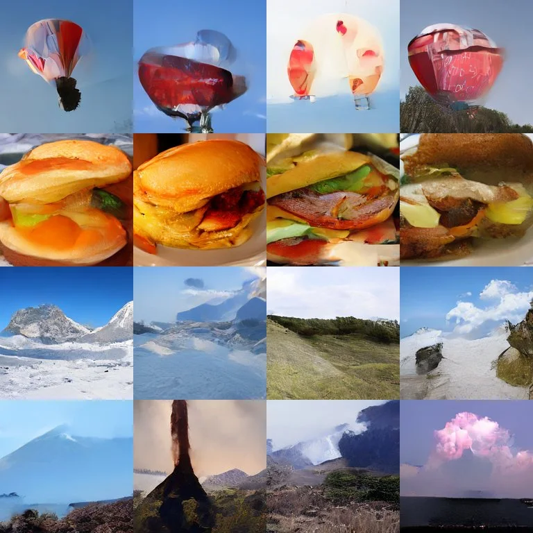
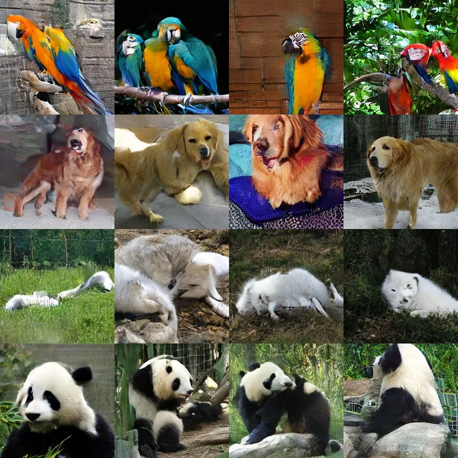

<!-- TODO: co-authors (add them to the authors list and the bibtex) -->
<style>
    /* Amber is iFeCo (student block, teacher's cleaner view, loss), slate the baseline and the flow-map loss, violet REPA. */
    :root { --dim: 0.1; --acc: #c2410c; --acc-f: #fff1e6; --acc-s: #ffedd5; --sl: #475569; --sl-f: #f1f5f9; --rep: #7c3aed; --grid: #ececef; }
    @media (prefers-color-scheme: dark) {
        :root { --dim: 0.14; --acc: #fb923c; --acc-f: rgba(251, 146, 60, 0.14); --acc-s: rgba(251, 146, 60, 0.24); --sl: #94a3b8; --sl-f: rgba(148, 163, 184, 0.14); --rep: #a78bfa; --grid: #222225; }
    }
    .fe-fig { margin-block: 0 48px; }
    .fe-fig > figcaption, main .caption { margin: 0; }
    main h2 { margin-bottom: 12px; }
    #results .table-wrap { margin-top: 8px; }
    #results .table-wrap + .caption { margin-bottom: 32px; }
    .fe-media { margin-bottom: 16px; }
    .fs { display: block; width: 100%; height: auto; }
    .fs text { font-family: var(--font); font-size: 15px; fill: var(--text); }
    .fs .lb, .fs .tick { font-size: 13px; fill: var(--muted); }
    .fs .strong { fill: var(--text); font-weight: 600; }
    .fs .acc { fill: var(--acc); }
    .fs .it { font-style: italic; }
    .fs .sub { font-size: 10px; baseline-shift: sub; }
    .fs .hd-txt { fill: var(--text); } .fs .hd-mut { fill: var(--muted); } .fs .hd-acc { fill: var(--acc); }
    .fs .traj { stroke: var(--muted); stroke-width: 2; opacity: 0.6; }
    .fs .lead { stroke: var(--border); stroke-width: 1; }
    .fs .dot { fill: var(--text); }
    .fs .ring { fill: var(--acc-s); stroke: var(--acc); stroke-width: 2.5; }
    .fs .land { fill: var(--muted); }
    .fs .jump { fill: none; stroke: var(--text); stroke-width: 2.5; }
    .fs .jump.dash { stroke: var(--muted); stroke-width: 1.8; stroke-dasharray: 6 5; }
    .fs .arr { fill: none; stroke: var(--acc); stroke-width: 2; }
    .fs .ln { fill: none; stroke-width: 2; } .fs .ln.mut { stroke: var(--muted); } .fs .ln.acc { stroke: var(--acc); } .fs .ln.dash { stroke-dasharray: 5 4; }
    .fs .blk { fill: var(--surface); stroke: var(--border); stroke-width: 1; }
    .fs .blk.acc { fill: var(--acc); stroke: var(--acc); } .fs .blk.acc-o { fill: var(--acc-f); stroke: var(--acc); stroke-width: 2; }
    .fs .bx { stroke-width: 1.5; } .fs .bx.sl { fill: var(--sl-f); stroke: var(--sl); } .fs .bx.acc-f { fill: var(--acc-f); stroke: var(--acc); }
    .fs .bt { font-weight: 600; }
    /* Method figure buttons: parts outside the chosen loss dim; without JS everything stays lit. */
    .method .u { transition: opacity 0.2s; }
    @media (prefers-reduced-motion: reduce) { .method .u { transition: none; } }
    .fe-btnfig[data-task="flow"] .u:not(.on-flow), .fe-btnfig[data-task="cons"] .u:not(.on-cons) { opacity: var(--dim); }
    .fe-task-text { min-height: 3em; }
    /* Curves: log FID against training steps. Hover a point for its value. */
    .curve .ttl { font-weight: 600; }
    .curve .grid { stroke: var(--grid); } .curve .axis { stroke: var(--muted); } .curve .ax { font-size: 12px; fill: var(--muted); }
    .curve .ln { fill: none; stroke-width: 2.2; stroke-linejoin: round; } .curve .ln.base { stroke: var(--sl); } .curve .ln.ours { stroke: var(--acc); } .curve .ln.repa { stroke: var(--rep); }
    .curve .pt { fill: transparent; } .curve .pt-g:hover .pt { fill: var(--text); r: 4; }
    .curve .spd { font-size: 14px; font-weight: 600; fill: var(--acc); }
    .curve .end { font-size: 13px; font-weight: 600; } .curve .end.base { fill: var(--sl); } .curve .end.ours { fill: var(--acc); }
    .curve .lvl { stroke: var(--sl); stroke-width: 1; stroke-dasharray: 3 3; }
    .fe-teaser { display: grid; grid-template-columns: 560fr 340fr; gap: 24px; align-items: end; }
    .fe-key { display: flex; flex-wrap: wrap; justify-content: center; gap: 4px 18px; margin-block: 0 8px; color: var(--muted); font-size: var(--text-secondary); }
    .fe-key span { display: inline-flex; align-items: center; gap: 6px; }
    .fe-key i { display: inline-block; width: 18px; height: 0; border-top: 2.5px solid var(--sl); }
    .fe-key .k-ours { border-color: var(--acc); } .fe-key .k-repa { border-color: var(--rep); }
    .fe-curves { display: grid; grid-template-columns: repeat(3, 1fr); gap: 8px 12px; }
    /* Why it is free: three families side by side, one at a time on phones. */
    .fe-panels { display: grid; grid-template-columns: repeat(3, 1fr); }
    .fd text { font-family: var(--font); font-size: 15px; fill: var(--text); }
    .fd .mut { fill: var(--muted); } .fd .small { font-size: 13px; } .fd .b { font-weight: 600; } .fd .acc { fill: var(--acc); }
    .fd .arc { fill: none; stroke: var(--text); stroke-width: 2.5; }
    .fd .arc-d { fill: none; stroke: var(--muted); stroke-width: 2; stroke-dasharray: 6 5; }
    .fd .ar-acc-d { fill: none; stroke: var(--acc); stroke-width: 2; stroke-dasharray: 5 4; }
    .fd .hd-text { fill: var(--text); } .fd .hd-mut { fill: var(--muted); } .fd .hd-acc { fill: var(--acc); }
    .fd .traj { fill: none; stroke: var(--muted); stroke-width: 1; stroke-dasharray: 1.5 4; opacity: 0.8; }
    .fd .main { fill: none; stroke: var(--muted); stroke-width: 2; }
    .fd .dens { fill: var(--surface); stroke: var(--muted); stroke-width: 1.5; }
    .fd .dot { fill: var(--text); } .fd .pt { fill: var(--muted); }
    .fd .cv { fill: var(--acc-s); stroke: var(--acc); stroke-width: 2.5; }
    /* Samples: baseline and iFeCo side by side, same classes and noise; one family at a time. */
    .fe-pair { display: grid; grid-template-columns: 1fr 1fr; gap: 24px; }
    .fe-pair figure { margin: 0; }
    .fe-pair figcaption { margin-block: 0 8px; text-align: center; font-size: var(--text-secondary); font-weight: 600; color: var(--sl); }
    .fe-pair figcaption.ours { color: var(--acc); }
    .fe-pair img { display: block; width: 100%; height: auto; }
    #fe-samples[data-on="shortcut"] .set-meanflow, #fe-samples[data-on="meanflow"] .set-shortcut { display: none; }
    @media (min-width: 768px) { .fe-panels[data-on] > svg, .fe-curves[data-on] > svg { display: block; } }
    @media (max-width: 767px) {
        .fe-teaser { grid-template-columns: 1fr; max-width: 480px; margin: 0 auto; gap: 16px; }
        .curve.teaser text { font-size: 17px; } .curve.teaser .tick, .curve.teaser .end { font-size: 15px; } .curve.teaser .spd { font-size: 16px; }
        .fe-panels, .fe-curves { grid-template-columns: 1fr; max-width: 400px; margin: 0 auto; }
        .fe-panels[data-on="0"] > svg:not(:nth-child(1)), .fe-panels[data-on="1"] > svg:not(:nth-child(2)), .fe-panels[data-on="2"] > svg:not(:nth-child(3)),
        .fe-curves[data-on="0"] > svg:not(.fam-0), .fe-curves[data-on="1"] > svg:not(.fam-1), .fe-curves[data-on="2"] > svg:not(.fam-2) { display: none; }
        .fe-pair { gap: 12px; }
        .fe-long { display: none; }
        .fe-btns { flex-wrap: nowrap; }
        /* six columns in 358px: smaller type, tighter cells, no backbone prefix */
        #results table { font-size: 13px; }
        #results td, #results th { padding-left: 4px; padding-right: 4px; }
        #results td:first-child, #results th:first-child { padding-left: 0; }
    }
</style>

<section id="teaser" class="wide">
    <figure class="fe-fig">
        <div class="fe-media fe-teaser">
            <div class="only-desk"><svg class="fs concept" viewBox="0 0 560 250" role="img" aria-labelledby="tc-t">
<title id="tc-t">A trajectory from noise to an image. The student makes one long jump from the noisier view; two shorter jumps through the cleaner view land at the same point. Below, the student at the noisier view and the teacher at the cleaner view; the consistency loss makes the student's early features predict the teacher's deep features.</title>
<defs><marker id="ah-txt" viewBox="0 0 10 10" refX="8" refY="5" markerUnits="userSpaceOnUse" markerWidth="10" markerHeight="10" orient="auto"><path class="hd-txt" d="M0,0 L10,5 L0,10 z"/></marker><marker id="ah-mut" viewBox="0 0 10 10" refX="8" refY="5" markerUnits="userSpaceOnUse" markerWidth="10" markerHeight="10" orient="auto"><path class="hd-mut" d="M0,0 L10,5 L0,10 z"/></marker><marker id="ah-acc" viewBox="0 0 10 10" refX="8" refY="5" markerUnits="userSpaceOnUse" markerWidth="10" markerHeight="10" orient="auto"><path class="hd-acc" d="M0,0 L10,5 L0,10 z"/></marker></defs>
<line class="traj" x1="64" y1="70" x2="496" y2="70"/>
<image href="view_noise.webp" x="12" y="46.0" width="48" height="48"/><text class="lb" x="36.0" y="110.0" text-anchor="middle">noise</text>
<image href="view_image.webp" x="500" y="46.0" width="48" height="48"/><text class="lb" x="524.0" y="110.0" text-anchor="middle">image</text>
<path class="jump" d="M177,65 Q300.0,-34 424,65" marker-end="url(#ah-txt)"/>
<text class="lb strong" x="300.0" y="14" text-anchor="middle">student jump</text>
<path class="jump dash" d="M177,64 Q255.0,22 331,63" marker-end="url(#ah-mut)"/>
<path class="jump dash" d="M349,63 Q385.0,30 424,65" marker-end="url(#ah-mut)"/>
<text class="lb" x="259.0" y="96" text-anchor="middle">two shorter jumps</text>
<circle class="land" cx="430" cy="70" r="4"/>
<circle class="ring" cx="340" cy="70" r="8"/>
<circle class="dot" cx="170" cy="70" r="6"/>
<line class="lead" x1="170" y1="79" x2="170" y2="102"/>
<image href="view_noisier.webp" x="146.0" y="104" width="48" height="48"/>
<text class="lb" x="170" y="168" text-anchor="middle">noisier view, <tspan class='it'>t</tspan><tspan class='sub'>2</tspan></text>
<text class="strong" x="170" y="188" text-anchor="middle">student</text>
<line class="lead" x1="340" y1="79" x2="340" y2="102"/>
<image href="view_cleaner.webp" x="316.0" y="104" width="48" height="48"/>
<text class="lb" x="340" y="168" text-anchor="middle">cleaner view, <tspan class='it'>t</tspan><tspan class='sub'>1</tspan></text>
<text class="strong acc" x="340" y="188" text-anchor="middle">teacher (EMA)</text>
<line class="arr" x1="180" y1="214" x2="326" y2="214" marker-end="url(#ah-acc)"/>
<text class="lb acc" x="255.0" y="206" text-anchor="middle">early features predict deep features</text>
<text class="lb" x="255.0" y="234" text-anchor="middle">consistency loss, no extra pass</text>
</svg></div>
            <div class="only-phone"><svg class="fs concept concept--phone" viewBox="0 0 400 256" role="img" aria-labelledby="tcp-t">
<title id="tcp-t">A trajectory from noise to an image. The student makes one long jump from the noisier view; two shorter jumps through the cleaner view land at the same point. Below, the student at the noisier view and the teacher at the cleaner view; the consistency loss makes the student's early features predict the teacher's deep features.</title>
<defs><marker id="ah-txt" viewBox="0 0 10 10" refX="8" refY="5" markerUnits="userSpaceOnUse" markerWidth="10" markerHeight="10" orient="auto"><path class="hd-txt" d="M0,0 L10,5 L0,10 z"/></marker><marker id="ah-mut" viewBox="0 0 10 10" refX="8" refY="5" markerUnits="userSpaceOnUse" markerWidth="10" markerHeight="10" orient="auto"><path class="hd-mut" d="M0,0 L10,5 L0,10 z"/></marker><marker id="ah-acc" viewBox="0 0 10 10" refX="8" refY="5" markerUnits="userSpaceOnUse" markerWidth="10" markerHeight="10" orient="auto"><path class="hd-acc" d="M0,0 L10,5 L0,10 z"/></marker></defs>
<line class="traj" x1="48" y1="60" x2="352" y2="60"/>
<image href="view_noise.webp" x="4" y="40.0" width="40" height="40"/><text class="lb" x="24.0" y="96.0" text-anchor="middle">noise</text>
<image href="view_image.webp" x="356" y="40.0" width="40" height="40"/><text class="lb" x="376.0" y="96.0" text-anchor="middle">image</text>
<path class="jump" d="M137,55 Q215.0,-16 294,55" marker-end="url(#ah-txt)"/>
<text class="lb strong" x="215.0" y="14" text-anchor="middle">student jump</text>
<path class="jump dash" d="M137,54 Q185.0,26 231,53" marker-end="url(#ah-mut)"/>
<path class="jump dash" d="M249,53 Q270.0,32 294,55" marker-end="url(#ah-mut)"/>
<text class="lb" x="189.0" y="86" text-anchor="middle">two shorter jumps</text>
<circle class="land" cx="300" cy="60" r="4"/>
<circle class="ring" cx="240" cy="60" r="8"/>
<circle class="dot" cx="130" cy="60" r="6"/>
<line class="lead" x1="130" y1="69" x2="130" y2="92"/>
<image href="view_noisier.webp" x="110.0" y="94" width="40" height="40"/>
<text class="lb" x="130" y="150" text-anchor="middle">noisier view, <tspan class='it'>t</tspan><tspan class='sub'>2</tspan></text>
<text class="strong" x="130" y="170" text-anchor="middle">student</text>
<line class="lead" x1="240" y1="69" x2="240" y2="92"/>
<image href="view_cleaner.webp" x="220.0" y="94" width="40" height="40"/>
<text class="lb" x="240" y="150" text-anchor="middle">cleaner view, <tspan class='it'>t</tspan><tspan class='sub'>1</tspan></text>
<text class="strong acc" x="240" y="170" text-anchor="middle">teacher (EMA)</text>
<line class="arr" x1="140" y1="196" x2="226" y2="196" marker-end="url(#ah-acc)"/>
<text class="lb acc" x="185.0" y="188" text-anchor="middle">early features predict deep features</text>
<text class="lb" x="185.0" y="216" text-anchor="middle">consistency loss, no extra pass</text>
</svg></div>
            <svg class="fs curve teaser" viewBox="0 0 340 236" role="img" aria-label="Shortcut DiT-B/2, 1 step, 1-step FID over training steps. Baseline ends at 37.0 after 1200k steps; iFeCo ends at 27.7 after 1200k steps."><text class="ttl" x="161.0" y="18" text-anchor="middle">Shortcut DiT-B/2, 1 step</text>
<line class="grid" x1="46" y1="181.2" x2="276" y2="181.2"/>
<text class="tick" x="40" y="185.2" text-anchor="end">30</text>
<line class="grid" x1="46" y1="139.4" x2="276" y2="139.4"/>
<text class="tick" x="40" y="143.4" text-anchor="end">40</text>
<line class="grid" x1="46" y1="80.6" x2="276" y2="80.6"/>
<text class="tick" x="40" y="84.6" text-anchor="end">60</text>
<line class="grid" x1="46" y1="38.8" x2="276" y2="38.8"/>
<text class="tick" x="40" y="42.8" text-anchor="end">80</text>
<line class="grid" x1="46.0" y1="30" x2="46.0" y2="202"/>
<text class="tick" x="46.0" y="218" text-anchor="middle">0</text>
<line class="grid" x1="119.6" y1="30" x2="119.6" y2="202"/>
<text class="tick" x="119.6" y="218" text-anchor="middle">400k</text>
<line class="grid" x1="193.2" y1="30" x2="193.2" y2="202"/>
<text class="tick" x="193.2" y="218" text-anchor="middle">800k</text>
<line class="grid" x1="266.8" y1="30" x2="266.8" y2="202"/>
<text class="tick" x="266.8" y="218" text-anchor="middle">1.2M</text>
<line class="axis" x1="46" y1="202" x2="276" y2="202"/>
<line class="axis" x1="46" y1="30" x2="46" y2="202"/>
<text class="ax" transform="translate(13 116.0) rotate(-90)" text-anchor="middle">1-step FID</text>
<polyline class="ln base" points="64.4,38.2 82.8,78.5 101.2,102.0 119.6,113.7 138.0,121.8 156.4,128.3 174.8,134.3 193.3,140.1 211.6,140.8 230.0,146.9 248.4,150.3 266.8,151.0"/>
<g class="pt-g"><title>Baseline, 100k steps: FID 80.35</title><circle class="pt base" cx="64.4" cy="38.2" r="7"/></g>
<g class="pt-g"><title>Baseline, 200k steps: FID 60.88</title><circle class="pt base" cx="82.8" cy="78.5" r="7"/></g>
<g class="pt-g"><title>Baseline, 300k steps: FID 51.78</title><circle class="pt base" cx="101.2" cy="102.0" r="7"/></g>
<g class="pt-g"><title>Baseline, 400k steps: FID 47.75</title><circle class="pt base" cx="119.6" cy="113.7" r="7"/></g>
<g class="pt-g"><title>Baseline, 500k steps: FID 45.16</title><circle class="pt base" cx="138.0" cy="121.8" r="7"/></g>
<g class="pt-g"><title>Baseline, 600k steps: FID 43.20</title><circle class="pt base" cx="156.4" cy="128.3" r="7"/></g>
<g class="pt-g"><title>Baseline, 700k steps: FID 41.44</title><circle class="pt base" cx="174.8" cy="134.3" r="7"/></g>
<g class="pt-g"><title>Baseline, 801k steps: FID 39.83</title><circle class="pt base" cx="193.3" cy="140.1" r="7"/></g>
<g class="pt-g"><title>Baseline, 900k steps: FID 39.62</title><circle class="pt base" cx="211.6" cy="140.8" r="7"/></g>
<g class="pt-g"><title>Baseline, 1000k steps: FID 37.99</title><circle class="pt base" cx="230.0" cy="146.9" r="7"/></g>
<g class="pt-g"><title>Baseline, 1100k steps: FID 37.11</title><circle class="pt base" cx="248.4" cy="150.3" r="7"/></g>
<g class="pt-g"><title>Baseline, 1200k steps: FID 36.95</title><circle class="pt base" cx="266.8" cy="151.0" r="7"/></g>
<polyline class="ln ours" points="64.4,59.3 82.8,109.9 101.2,137.4 119.6,151.6 138.0,163.8 156.4,171.9 174.8,175.7 193.3,180.4 211.6,184.0 230.0,189.3 248.4,191.2 266.8,192.7"/>
<g class="pt-g"><title>iFeCo, 100k steps: FID 69.47</title><circle class="pt ours" cx="64.4" cy="59.3" r="7"/></g>
<g class="pt-g"><title>iFeCo, 200k steps: FID 49.03</title><circle class="pt ours" cx="82.8" cy="109.9" r="7"/></g>
<g class="pt-g"><title>iFeCo, 300k steps: FID 40.58</title><circle class="pt ours" cx="101.2" cy="137.4" r="7"/></g>
<g class="pt-g"><title>iFeCo, 400k steps: FID 36.79</title><circle class="pt ours" cx="119.6" cy="151.6" r="7"/></g>
<g class="pt-g"><title>iFeCo, 500k steps: FID 33.83</title><circle class="pt ours" cx="138.0" cy="163.8" r="7"/></g>
<g class="pt-g"><title>iFeCo, 600k steps: FID 32.00</title><circle class="pt ours" cx="156.4" cy="171.9" r="7"/></g>
<g class="pt-g"><title>iFeCo, 700k steps: FID 31.16</title><circle class="pt ours" cx="174.8" cy="175.7" r="7"/></g>
<g class="pt-g"><title>iFeCo, 801k steps: FID 30.17</title><circle class="pt ours" cx="193.3" cy="180.4" r="7"/></g>
<g class="pt-g"><title>iFeCo, 900k steps: FID 29.43</title><circle class="pt ours" cx="211.6" cy="184.0" r="7"/></g>
<g class="pt-g"><title>iFeCo, 1000k steps: FID 28.37</title><circle class="pt ours" cx="230.0" cy="189.3" r="7"/></g>
<g class="pt-g"><title>iFeCo, 1100k steps: FID 28.01</title><circle class="pt ours" cx="248.4" cy="191.2" r="7"/></g>
<g class="pt-g"><title>iFeCo, 1200k steps: FID 27.72</title><circle class="pt ours" cx="266.8" cy="192.7" r="7"/></g>
<line class="arr" x1="262.8" y1="151.0" x2="126.8" y2="151.0" marker-end="url(#ah-acc)"/>
<text class="spd" x="274" y="46" text-anchor="end">3.0&times; fewer steps</text>
<text class="end base" x="272.8" y="155.0">Baseline</text>
<text class="end ours" x="272.8" y="196.7">iFeCo</text></svg>
        </div>
        <figcaption>A flow map jumps along one trajectory from noise to image. One long jump lands where two shorter ones land, so each training image gives a noisier view and a cleaner view. The training target already evaluates a teacher at the cleaner view; iFeCo trains early features of the noisier view to predict that teacher's deep features. Right: 1-step FID over training on ImageNet 256&times;256; the arrow is the training saved to reach the baseline's final FID.</figcaption>
    </figure>
</section>

<section id="tldr">
    <p class="tldr"><strong>TL;DR:</strong> Flow-map training already evaluates a teacher on a cleaner view to build the target for a student on a noisier view. iFeCo adds one loss: early features of the noisier view predict the teacher's deep features of the cleaner view. It needs no external encoder and no extra forward pass.</p>
    <p class="note">Work in progress. The results on this page are preliminary: each model is trained once, and some models have not finished training.</p>
</section>

<section id="context" class="intro">
    <p>Diffusion training seems difficult partly because of the semantic structure that has to come out of it. We have seen <a href="https://arxiv.org/abs/2510.11690">representation autoencoders</a>, <a href="https://arxiv.org/abs/2312.03701">representation generation</a> and <a href="https://arxiv.org/abs/2410.06940">representation alignment</a>. Much of this work says the same thing: diffusion training needs some form of self-supervised signal to train faster and generate better.</p>
    <p>Since I was mostly working on few-step models (flow maps), I noticed that they are, in principle, a knowledge distillation algorithm: a student tries to distill from a multi-step teacher. Looked at closely, the student and the teacher see two views of the same data. The teacher gets the cleaner one and the student the noisier one. This gives a consistency target in feature space, without any additional forward pass. That is the free lunch for flow map training.</p>
</section>

<section id="samples" class="wide">
    <h2>One-step samples</h2>
    <figure class="fe-fig" id="fe-samples" data-on="shortcut">
        <div class="tabs fe-tabs" role="group" aria-label="Flow-map family" hidden>
            <button type="button" class="btn" data-on="shortcut" aria-pressed="true">Shortcut<span class="fe-long"> DiT-B/2</span></button>
            <button type="button" class="btn" data-on="meanflow" aria-pressed="false">MeanFlow<span class="fe-long"> SiT-B/2</span></button>
        </div>
        <div class="fe-media fe-pair set-shortcut">
            <figure><figcaption>Baseline</figcaption></figure>
            <figure><figcaption class="ours">iFeCo</figcaption></figure>
        </div>
        <div class="fe-media fe-pair set-meanflow">
            <figure><figcaption>Baseline</figcaption></figure>
            <figure><figcaption class="ours">iFeCo</figcaption></figure>
        </div>
        <figcaption>ImageNet 256&times;256, one sampling step, 1.2M training steps, uncurated. Each row is one class; both grids share classes and noise, so the pictures differ only by the loss.</figcaption>
    </figure>
</section>

<section id="method">
    <h2>Two views of one trajectory</h2>
    <p>The student reads the noisier view and the teacher, an EMA copy of the student, reads the cleaner view. One predictor connects the two.</p>
    <figure class="fe-fig fe-btnfig" id="fe-method">
        <div class="tabs fe-btns" role="group" aria-label="Losses" hidden>
            <button type="button" class="btn" data-task="" aria-pressed="true">Both<span class="fe-long"> losses</span></button>
            <button type="button" class="btn" data-task="flow" aria-pressed="false">Flow-map loss</button>
            <button type="button" class="btn" data-task="cons" aria-pressed="false">Consistency loss</button>
        </div>
        <div class="fe-media only-desk"><svg class="fs method" viewBox="0 0 700 330" role="img" aria-labelledby="md-t">
<title id="md-t">One training step. The student reads the noisier view and the EMA teacher reads the cleaner view. The flow-map loss uses the teacher's output as its target. The consistency loss maps the student's block-2 features through a predictor to the teacher's block-7 features, with no gradient into the teacher.</title>
<line class="traj" x1="36" y1="40" x2="36" y2="300"/>
<text class="lb" x="36" y="30" text-anchor="middle">noise</text><text class="lb" x="36" y="318" text-anchor="middle">data</text>
<circle class="dot" cx="36" cy="92" r="6"/><circle class="ring" cx="36" cy="258" r="8"/>
<text class="lb it" x="22" y="97" text-anchor="end">t<tspan class="sub">2</tspan></text><text class="lb it" x="22" y="263" text-anchor="end">t<tspan class="sub">1</tspan></text>
<image href="view_noisier.webp" x="60" y="68.0" width="48" height="48"/>
<text class="lb" x="84.0" y="131.0" text-anchor="middle">noisier view</text>
<line class="ln mut" x1="112" y1="92" x2="126" y2="92" marker-end="url(#ah-mut)"/>
<text class="strong" x="271.0" y="58.0" text-anchor="middle">student</text>
<rect class="blk" x="130" y="70.0" width="18" height="44" rx="3"/>
<rect class="blk" x="154" y="70.0" width="18" height="44" rx="3"/>
<rect class="blk" x="178" y="70.0" width="18" height="44" rx="3"/>
<rect class="blk" x="202" y="70.0" width="18" height="44" rx="3"/>
<rect class="blk" x="226" y="70.0" width="18" height="44" rx="3"/>
<rect class="blk" x="250" y="70.0" width="18" height="44" rx="3"/>
<rect class="blk" x="274" y="70.0" width="18" height="44" rx="3"/>
<rect class="blk" x="298" y="70.0" width="18" height="44" rx="3"/>
<rect class="blk" x="322" y="70.0" width="18" height="44" rx="3"/>
<rect class="blk" x="346" y="70.0" width="18" height="44" rx="3"/>
<rect class="blk" x="370" y="70.0" width="18" height="44" rx="3"/>
<rect class="blk" x="394" y="70.0" width="18" height="44" rx="3"/>
<image href="view_cleaner.webp" x="60" y="234.0" width="48" height="48"/>
<text class="lb" x="84.0" y="297.0" text-anchor="middle">cleaner view</text>
<line class="ln mut" x1="112" y1="258" x2="126" y2="258" marker-end="url(#ah-mut)"/>
<text class="strong" x="271.0" y="299.0" text-anchor="middle">teacher (EMA)</text>
<rect class="blk" x="130" y="236.0" width="18" height="44" rx="3"/>
<rect class="blk" x="154" y="236.0" width="18" height="44" rx="3"/>
<rect class="blk" x="178" y="236.0" width="18" height="44" rx="3"/>
<rect class="blk" x="202" y="236.0" width="18" height="44" rx="3"/>
<rect class="blk" x="226" y="236.0" width="18" height="44" rx="3"/>
<rect class="blk" x="250" y="236.0" width="18" height="44" rx="3"/>
<rect class="blk" x="274" y="236.0" width="18" height="44" rx="3"/>
<rect class="blk" x="298" y="236.0" width="18" height="44" rx="3"/>
<rect class="blk" x="322" y="236.0" width="18" height="44" rx="3"/>
<rect class="blk" x="346" y="236.0" width="18" height="44" rx="3"/>
<rect class="blk" x="370" y="236.0" width="18" height="44" rx="3"/>
<rect class="blk" x="394" y="236.0" width="18" height="44" rx="3"/>
<g class="u on-flow"><line class="ln mut" x1="416" y1="92" x2="428" y2="92" marker-end="url(#ah-mut)"/>
<path class="ln mut dash" d="M416,258 H500 V116" marker-end="url(#ah-mut)"/>
<text class="lb" x="508" y="189.0">target</text>
<rect class="bx sl" x="432" y="72" width="140" height="40" rx="4"/>
<text class="bt" x="502.0" y="97.0" text-anchor="middle">flow-map loss</text></g>
<g class="u on-cons"><rect class="blk acc" x="154" y="70.0" width="18" height="44" rx="3"/>
<rect class="blk acc-o" x="274" y="236.0" width="18" height="44" rx="3"/>
<line class="ln acc" x1="163.0" y1="116.0" x2="163.0" y2="146" marker-end="url(#ah-acc)"/>
<text class="lb acc" x="171.0" y="136.0">block 2</text>
<rect class="bx acc-f" x="123" y="150" width="80" height="28" rx="4"/><text class="bt" x="163.0" y="169.0" text-anchor="middle">predictor</text>
<line class="ln acc" x1="207" y1="164.0" x2="236" y2="164.0" marker-end="url(#ah-acc)"/>
<rect class="bx acc-f" x="240" y="146" width="156" height="36" rx="4"/><text class="bt" x="318.0" y="169.0" text-anchor="middle">consistency loss</text>
<line class="ln acc dash" x1="283.0" y1="234.0" x2="283.0" y2="186" marker-end="url(#ah-acc)"/>
<text class="lb acc" x="291.0" y="213.0">block 7, no gradient</text></g>
</svg></div>
        <div class="fe-media only-phone"><svg class="fs method method--phone" viewBox="0 0 400 356" role="img" aria-labelledby="mp-t">
<title id="mp-t">One training step. The student reads the noisier view and the EMA teacher reads the cleaner view. The flow-map loss uses the teacher's output as its target. The consistency loss maps the student's block-2 features through a predictor to the teacher's block-7 features, with no gradient into the teacher.</title>
<image href="view_noisier.webp" x="26" y="39.0" width="42" height="42"/>
<text class="lb" x="47.0" y="96.0" text-anchor="middle">noisier view</text>
<text class="strong" x="193.5" y="28.0" text-anchor="middle">student</text>
<rect class="blk" x="88" y="40.0" width="13" height="40" rx="3"/>
<rect class="blk" x="106" y="40.0" width="13" height="40" rx="3"/>
<rect class="blk" x="124" y="40.0" width="13" height="40" rx="3"/>
<rect class="blk" x="142" y="40.0" width="13" height="40" rx="3"/>
<rect class="blk" x="160" y="40.0" width="13" height="40" rx="3"/>
<rect class="blk" x="178" y="40.0" width="13" height="40" rx="3"/>
<rect class="blk" x="196" y="40.0" width="13" height="40" rx="3"/>
<rect class="blk" x="214" y="40.0" width="13" height="40" rx="3"/>
<rect class="blk" x="232" y="40.0" width="13" height="40" rx="3"/>
<rect class="blk" x="250" y="40.0" width="13" height="40" rx="3"/>
<rect class="blk" x="268" y="40.0" width="13" height="40" rx="3"/>
<rect class="blk" x="286" y="40.0" width="13" height="40" rx="3"/>
<image href="view_cleaner.webp" x="26" y="279.0" width="42" height="42"/>
<text class="lb" x="47.0" y="336.0" text-anchor="middle">cleaner view</text>
<text class="strong" x="193.5" y="339.0" text-anchor="middle">teacher (EMA)</text>
<rect class="blk" x="88" y="280.0" width="13" height="40" rx="3"/>
<rect class="blk" x="106" y="280.0" width="13" height="40" rx="3"/>
<rect class="blk" x="124" y="280.0" width="13" height="40" rx="3"/>
<rect class="blk" x="142" y="280.0" width="13" height="40" rx="3"/>
<rect class="blk" x="160" y="280.0" width="13" height="40" rx="3"/>
<rect class="blk" x="178" y="280.0" width="13" height="40" rx="3"/>
<rect class="blk" x="196" y="280.0" width="13" height="40" rx="3"/>
<rect class="blk" x="214" y="280.0" width="13" height="40" rx="3"/>
<rect class="blk" x="232" y="280.0" width="13" height="40" rx="3"/>
<rect class="blk" x="250" y="280.0" width="13" height="40" rx="3"/>
<rect class="blk" x="268" y="280.0" width="13" height="40" rx="3"/>
<rect class="blk" x="286" y="280.0" width="13" height="40" rx="3"/>
<g class="u on-flow">
<path class="ln mut dash" d="M303,300 H350 V84" marker-end="url(#ah-mut)"/>
<text class="lb" x="358" y="194.0">target</text>
<rect class="bx sl" x="310" y="40" width="84" height="40" rx="4"/>
<text class="bt" x="352.0" y="58.0" text-anchor="middle">flow-map</text><text class="bt" x="352.0" y="74.0" text-anchor="middle">loss</text></g>
<g class="u on-cons"><rect class="blk acc" x="106" y="40.0" width="13" height="40" rx="3"/>
<rect class="blk acc-o" x="196" y="280.0" width="13" height="40" rx="3"/>
<line class="ln acc" x1="112.5" y1="82.0" x2="112.5" y2="146" marker-end="url(#ah-acc)"/>
<text class="lb acc" x="120.5" y="119.0">block 2</text>
<rect class="bx acc-f" x="66" y="150" width="78" height="28" rx="4"/><text class="bt" x="105.0" y="169.0" text-anchor="middle">predictor</text>
<line class="ln acc" x1="148" y1="164.0" x2="168" y2="164.0" marker-end="url(#ah-acc)"/>
<rect class="bx acc-f" x="172" y="146" width="146" height="36" rx="4"/><text class="bt" x="245.0" y="169.0" text-anchor="middle">consistency loss</text>
<line class="ln acc dash" x1="202.5" y1="278.0" x2="202.5" y2="186" marker-end="url(#ah-acc)"/>
<text class="lb acc" x="210.5" y="235.0">block 7, no gradient</text></g>
</svg></div>
        <p class="caption fe-task-text" aria-live="polite">One training step. The teacher's forward pass builds the flow-map target and, in the same pass, supplies the deep features that the student's early features learn to predict.</p>
    </figure>
    <p class="caption">The predictor is a two-layer MLP; the consistency loss is the cosine distance between its output and the teacher's features, per token, and the predictor is discarded after training. One setting serves all three families: loss weight 0.25, student block at a quarter of the depth (block 2 of 12 at B/2), teacher block at 70% (block 7 of 12).</p>
</section>

<section id="free" class="wide">
    <h2>The teacher pass is already there</h2>
    <p>Each flow-map family passes through the cleaner view when it builds its training target. iFeCo reads the teacher's features from that pass.</p>
    <figure class="fe-fig" id="fe-free">
        <div class="tabs fe-tabs only-phone" role="group" aria-label="Flow-map family" hidden>
            <button type="button" class="btn" data-on="0" aria-pressed="true">Shortcut</button>
            <button type="button" class="btn" data-on="1" aria-pressed="false">MeanFlow</button>
            <button type="button" class="btn" data-on="2" aria-pressed="false">LSD</button>
        </div>
        <div class="fe-media fe-panels">
<svg class="fd" viewBox="0.0 0 346.7 330" role="img" aria-label="Shortcut. Target: two EMA half steps. Teacher: EMA at the start of the second half step.">
            <defs>
                <marker id="tm-txt" viewBox="0 0 10 10" refX="8" refY="5" markerUnits="userSpaceOnUse" markerWidth="11" markerHeight="11" orient="auto-start-reverse"><path class="hd-text" d="M0,0 L10,5 L0,10 z"/></marker>
                <marker id="tm-mut" viewBox="0 0 10 10" refX="8" refY="5" markerUnits="userSpaceOnUse" markerWidth="11" markerHeight="11" orient="auto-start-reverse"><path class="hd-mut" d="M0,0 L10,5 L0,10 z"/></marker>
                <marker id="tm-acc" viewBox="0 0 10 10" refX="8" refY="5" markerUnits="userSpaceOnUse" markerWidth="11" markerHeight="11" orient="auto-start-reverse"><path class="hd-acc" d="M0,0 L10,5 L0,10 z"/></marker>
            </defs>
            <text class="b" x="173" y="26" text-anchor="middle">Shortcut</text>
            <text class="mut small" x="173" y="46" text-anchor="middle">target: two EMA half steps</text>
            <polyline class="dens" points="47.9,75.0 47.9,76.5 47.9,78.0 47.9,79.5 47.8,81.0 47.8,82.5 47.7,84.0 47.7,85.5 47.6,87.0 47.5,88.5 47.4,90.0 47.2,91.5 47.1,93.0 46.9,94.5 46.7,96.0 46.4,97.5 46.1,99.0 45.8,100.5 45.4,102.0 44.9,103.5 44.4,105.0 43.8,106.5 43.2,108.0 42.5,109.5 41.7,111.0 40.9,112.5 39.9,114.0 38.9,115.5 37.9,117.0 36.7,118.5 35.5,120.0 34.2,121.5 32.9,123.0 31.5,124.5 30.1,126.0 28.6,127.5 27.2,129.0 25.7,130.5 24.3,132.0 22.9,133.5 21.5,135.0 20.2,136.5 19.0,138.0 17.9,139.5 16.9,141.0 16.1,142.5 15.3,144.0 14.8,145.5 14.3,147.0 14.1,148.5 14.0,150.0 14.1,151.5 14.3,153.0 14.8,154.5 15.3,156.0 16.1,157.5 16.9,159.0 17.9,160.5 19.0,162.0 20.2,163.5 21.5,165.0 22.9,166.5 24.3,168.0 25.7,169.5 27.2,171.0 28.6,172.5 30.1,174.0 31.5,175.5 32.9,177.0 34.2,178.5 35.5,180.0 36.7,181.5 37.9,183.0 38.9,184.5 39.9,186.0 40.9,187.5 41.7,189.0 42.5,190.5 43.2,192.0 43.8,193.5 44.4,195.0 44.9,196.5 45.4,198.0 45.8,199.5 46.1,201.0 46.4,202.5 46.7,204.0 46.9,205.5 47.1,207.0 47.2,208.5 47.4,210.0 47.5,211.5 47.6,213.0 47.7,214.5 47.7,216.0 47.8,217.5 47.8,219.0 47.9,220.5 47.9,222.0 47.9,223.5 47.9,225.0"/>
            <polyline class="dens" points="298.7,75.0 298.7,76.5 298.7,78.0 298.7,79.5 298.8,81.0 298.8,82.5 299.0,84.0 299.2,85.5 299.5,87.0 300.0,88.5 300.8,90.0 301.8,91.5 303.2,93.0 305.1,94.5 307.4,96.0 310.2,97.5 313.3,99.0 316.8,100.5 320.5,102.0 324.0,103.5 327.2,105.0 329.9,106.5 331.7,108.0 332.6,109.5 332.4,111.0 331.2,112.5 329.1,114.0 326.2,115.5 322.9,117.0 319.3,118.5 315.6,120.0 312.2,121.5 309.2,123.0 306.6,124.5 304.4,126.0 302.7,127.5 301.4,129.0 300.5,130.5 299.8,132.0 299.4,133.5 299.1,135.0 298.9,136.5 298.8,138.0 298.7,139.5 298.7,141.0 298.7,142.5 298.7,144.0 298.7,145.5 298.7,147.0 298.7,148.5 298.7,150.0 298.7,151.5 298.7,153.0 298.7,154.5 298.7,156.0 298.7,157.5 298.7,159.0 298.7,160.5 298.8,162.0 298.9,163.5 299.1,165.0 299.4,166.5 299.8,168.0 300.5,169.5 301.4,171.0 302.7,172.5 304.4,174.0 306.6,175.5 309.2,177.0 312.2,178.5 315.6,180.0 319.3,181.5 322.9,183.0 326.2,184.5 329.1,186.0 331.2,187.5 332.4,189.0 332.6,190.5 331.7,192.0 329.9,193.5 327.2,195.0 324.0,196.5 320.5,198.0 316.8,199.5 313.3,201.0 310.2,202.5 307.4,204.0 305.1,205.5 303.2,207.0 301.8,208.5 300.8,210.0 300.0,211.5 299.5,213.0 299.2,214.5 299.0,216.0 298.8,217.5 298.8,219.0 298.7,220.5 298.7,222.0 298.7,223.5 298.7,225.0"/>
            <path class="traj" d="M52.0,102 C128.0,102 218.7,104 294.7,104"/>
            <path class="traj" d="M52.0,120 C128.0,120 218.7,108 294.7,108"/>
            <path class="traj" d="M52.0,136 C128.0,136 218.7,114 294.7,114"/>
            <path class="traj" d="M52.0,162 C128.0,162 218.7,180 294.7,180"/>
            <path class="traj" d="M52.0,180 C128.0,180 218.7,186 294.7,186"/>
            <path class="traj" d="M52.0,198 C128.0,198 218.7,194 294.7,194"/>
            <path class="main" d="M52.0,212 C128.0,212 218.7,194 294.7,194"/>
            <path class="arc" d="M93.5,216.8 Q161.2,272.8 227.9,205.0" marker-end="url(#tm-txt)"/>
            <text class="small" x="161.2" y="266.8" text-anchor="middle">student jump</text>
            <path class="arc-d" d="M93.5,203.8 Q125.2,170.8 151.8,196.3" marker-end="url(#tm-mut)"/>
            <path class="arc-d" d="M169.8,196.3 Q196.9,164.3 228.9,190.0" marker-end="url(#tm-mut)"/>
            <text class="mut small" x="196.9" y="170.3" text-anchor="middle">EMA half steps</text>
            <circle class="pt" cx="232.9" cy="197.0" r="4"/>
            <circle class="cv" cx="160.8" cy="204.3" r="8"/>
            <circle class="dot" cx="89.5" cy="210.8" r="5.5"/>
            <text class="mut small" x="30.0" y="246" text-anchor="middle">noise</text>
            <text class="mut small" x="316.7" y="246" text-anchor="middle">data</text>
            <text class="acc small" x="173" y="300" text-anchor="middle">teacher: EMA at the start</text>
            <text class="acc small" x="173" y="318" text-anchor="middle">of the second half step</text>
        </svg>
        <svg class="fd" viewBox="346.7 0 346.7 330" role="img" aria-label="MeanFlow. Target: a JVP along the path. Teacher: model features moved along the path by the JVP.">
            <text class="b" x="520" y="26" text-anchor="middle">MeanFlow</text>
            <text class="mut small" x="520" y="46" text-anchor="middle">target: a JVP along the path</text>
            <polyline class="dens" points="394.6,75.0 394.6,76.5 394.6,78.0 394.5,79.5 394.5,81.0 394.5,82.5 394.4,84.0 394.3,85.5 394.3,87.0 394.2,88.5 394.0,90.0 393.9,91.5 393.7,93.0 393.6,94.5 393.3,96.0 393.1,97.5 392.8,99.0 392.4,100.5 392.0,102.0 391.6,103.5 391.1,105.0 390.5,106.5 389.9,108.0 389.2,109.5 388.4,111.0 387.5,112.5 386.6,114.0 385.6,115.5 384.5,117.0 383.4,118.5 382.2,120.0 380.9,121.5 379.5,123.0 378.2,124.5 376.7,126.0 375.3,127.5 373.8,129.0 372.4,130.5 370.9,132.0 369.5,133.5 368.2,135.0 366.9,136.5 365.7,138.0 364.6,139.5 363.6,141.0 362.7,142.5 362.0,144.0 361.4,145.5 361.0,147.0 360.8,148.5 360.7,150.0 360.8,151.5 361.0,153.0 361.4,154.5 362.0,156.0 362.7,157.5 363.6,159.0 364.6,160.5 365.7,162.0 366.9,163.5 368.2,165.0 369.5,166.5 370.9,168.0 372.4,169.5 373.8,171.0 375.3,172.5 376.7,174.0 378.2,175.5 379.5,177.0 380.9,178.5 382.2,180.0 383.4,181.5 384.5,183.0 385.6,184.5 386.6,186.0 387.5,187.5 388.4,189.0 389.2,190.5 389.9,192.0 390.5,193.5 391.1,195.0 391.6,196.5 392.0,198.0 392.4,199.5 392.8,201.0 393.1,202.5 393.3,204.0 393.6,205.5 393.7,207.0 393.9,208.5 394.0,210.0 394.2,211.5 394.3,213.0 394.3,214.5 394.4,216.0 394.5,217.5 394.5,219.0 394.5,220.5 394.6,222.0 394.6,223.5 394.6,225.0"/>
            <polyline class="dens" points="645.3,75.0 645.3,76.5 645.4,78.0 645.4,79.5 645.4,81.0 645.5,82.5 645.6,84.0 645.9,85.5 646.2,87.0 646.7,88.5 647.4,90.0 648.5,91.5 649.9,93.0 651.7,94.5 654.1,96.0 656.8,97.5 660.0,99.0 663.5,100.5 667.1,102.0 670.7,103.5 673.9,105.0 676.6,106.5 678.4,108.0 679.3,109.5 679.1,111.0 677.9,112.5 675.8,114.0 672.9,115.5 669.5,117.0 665.9,118.5 662.3,120.0 658.9,121.5 655.8,123.0 653.2,124.5 651.1,126.0 649.4,127.5 648.1,129.0 647.2,130.5 646.5,132.0 646.1,133.5 645.8,135.0 645.6,136.5 645.5,138.0 645.4,139.5 645.4,141.0 645.4,142.5 645.3,144.0 645.3,145.5 645.3,147.0 645.3,148.5 645.3,150.0 645.3,151.5 645.3,153.0 645.3,154.5 645.3,156.0 645.4,157.5 645.4,159.0 645.4,160.5 645.5,162.0 645.6,163.5 645.8,165.0 646.1,166.5 646.5,168.0 647.2,169.5 648.1,171.0 649.4,172.5 651.1,174.0 653.2,175.5 655.8,177.0 658.9,178.5 662.3,180.0 665.9,181.5 669.5,183.0 672.9,184.5 675.8,186.0 677.9,187.5 679.1,189.0 679.3,190.5 678.4,192.0 676.6,193.5 673.9,195.0 670.7,196.5 667.1,198.0 663.5,199.5 660.0,201.0 656.8,202.5 654.1,204.0 651.7,205.5 649.9,207.0 648.5,208.5 647.4,210.0 646.7,211.5 646.2,213.0 645.9,214.5 645.6,216.0 645.5,217.5 645.4,219.0 645.4,220.5 645.4,222.0 645.3,223.5 645.3,225.0"/>
            <path class="traj" d="M398.7,102 C474.7,102 565.3,104 641.3,104"/>
            <path class="traj" d="M398.7,120 C474.7,120 565.3,108 641.3,108"/>
            <path class="traj" d="M398.7,136 C474.7,136 565.3,114 641.3,114"/>
            <path class="traj" d="M398.7,162 C474.7,162 565.3,180 641.3,180"/>
            <path class="traj" d="M398.7,180 C474.7,180 565.3,186 641.3,186"/>
            <path class="traj" d="M398.7,198 C474.7,198 565.3,194 641.3,194"/>
            <path class="main" d="M398.7,212 C474.7,212 565.3,194 641.3,194"/>
            <path class="arc" d="M440.2,216.8 Q507.9,272.8 574.6,205.0" marker-end="url(#tm-txt)"/>
            <text class="small" x="507.9" y="266.8" text-anchor="middle">student jump</text>
            <path class="ar-acc-d" d="M442.2,203.8 Q471.8,180.8 497.5,196.3" marker-end="url(#tm-acc)"/>
            <text class="acc small" x="471.8" y="180.8" text-anchor="middle">first-order step</text>
            <circle class="pt" cx="579.6" cy="197.0" r="4"/>
            <circle class="cv" cx="507.5" cy="204.3" r="8"/>
            <circle class="dot" cx="436.2" cy="210.8" r="5.5"/>
            <text class="mut small" x="376.7" y="246" text-anchor="middle">noise</text>
            <text class="mut small" x="663.3" y="246" text-anchor="middle">data</text>
            <text class="acc small" x="520" y="300" text-anchor="middle">teacher: model features moved</text>
            <text class="acc small" x="520" y="318" text-anchor="middle">along the path by the JVP</text>
        </svg>
        <svg class="fd" viewBox="693.3 0 346.7 330" role="img" aria-label="LSD. Target: EMA velocity at landing. Teacher: EMA at the landing point.">
            <text class="b" x="867" y="26" text-anchor="middle">LSD</text>
            <text class="mut small" x="867" y="46" text-anchor="middle">target: EMA velocity at landing</text>
            <polyline class="dens" points="741.3,75.0 741.2,76.5 741.2,78.0 741.2,79.5 741.2,81.0 741.1,82.5 741.1,84.0 741.0,85.5 740.9,87.0 740.8,88.5 740.7,90.0 740.6,91.5 740.4,93.0 740.2,94.5 740.0,96.0 739.7,97.5 739.4,99.0 739.1,100.5 738.7,102.0 738.3,103.5 737.7,105.0 737.2,106.5 736.5,108.0 735.8,109.5 735.1,111.0 734.2,112.5 733.3,114.0 732.3,115.5 731.2,117.0 730.0,118.5 728.8,120.0 727.5,121.5 726.2,123.0 724.8,124.5 723.4,126.0 722.0,127.5 720.5,129.0 719.0,130.5 717.6,132.0 716.2,133.5 714.9,135.0 713.6,136.5 712.4,138.0 711.3,139.5 710.3,141.0 709.4,142.5 708.7,144.0 708.1,145.5 707.7,147.0 707.4,148.5 707.3,150.0 707.4,151.5 707.7,153.0 708.1,154.5 708.7,156.0 709.4,157.5 710.3,159.0 711.3,160.5 712.4,162.0 713.6,163.5 714.9,165.0 716.2,166.5 717.6,168.0 719.0,169.5 720.5,171.0 722.0,172.5 723.4,174.0 724.8,175.5 726.2,177.0 727.5,178.5 728.8,180.0 730.0,181.5 731.2,183.0 732.3,184.5 733.3,186.0 734.2,187.5 735.1,189.0 735.8,190.5 736.5,192.0 737.2,193.5 737.7,195.0 738.3,196.5 738.7,198.0 739.1,199.5 739.4,201.0 739.7,202.5 740.0,204.0 740.2,205.5 740.4,207.0 740.6,208.5 740.7,210.0 740.8,211.5 740.9,213.0 741.0,214.5 741.1,216.0 741.1,217.5 741.2,219.0 741.2,220.5 741.2,222.0 741.2,223.5 741.3,225.0"/>
            <polyline class="dens" points="992.0,75.0 992.0,76.5 992.0,78.0 992.1,79.5 992.1,81.0 992.2,82.5 992.3,84.0 992.5,85.5 992.9,87.0 993.4,88.5 994.1,90.0 995.2,91.5 996.6,93.0 998.4,94.5 1000.7,96.0 1003.5,97.5 1006.7,99.0 1010.2,100.5 1013.8,102.0 1017.4,103.5 1020.6,105.0 1023.2,106.5 1025.1,108.0 1025.9,109.5 1025.8,111.0 1024.6,112.5 1022.4,114.0 1019.6,115.5 1016.2,117.0 1012.6,118.5 1009.0,120.0 1005.6,121.5 1002.5,123.0 999.9,124.5 997.7,126.0 996.1,127.5 994.8,129.0 993.8,130.5 993.2,132.0 992.7,133.5 992.4,135.0 992.3,136.5 992.1,138.0 992.1,139.5 992.0,141.0 992.0,142.5 992.0,144.0 992.0,145.5 992.0,147.0 992.0,148.5 992.0,150.0 992.0,151.5 992.0,153.0 992.0,154.5 992.0,156.0 992.0,157.5 992.0,159.0 992.1,160.5 992.1,162.0 992.3,163.5 992.4,165.0 992.7,166.5 993.2,168.0 993.8,169.5 994.8,171.0 996.1,172.5 997.7,174.0 999.9,175.5 1002.5,177.0 1005.6,178.5 1009.0,180.0 1012.6,181.5 1016.2,183.0 1019.6,184.5 1022.4,186.0 1024.6,187.5 1025.8,189.0 1025.9,190.5 1025.1,192.0 1023.2,193.5 1020.6,195.0 1017.4,196.5 1013.8,198.0 1010.2,199.5 1006.7,201.0 1003.5,202.5 1000.7,204.0 998.4,205.5 996.6,207.0 995.2,208.5 994.1,210.0 993.4,211.5 992.9,213.0 992.5,214.5 992.3,216.0 992.2,217.5 992.1,219.0 992.1,220.5 992.0,222.0 992.0,223.5 992.0,225.0"/>
            <path class="traj" d="M745.3,102 C821.3,102 912.0,104 988.0,104"/>
            <path class="traj" d="M745.3,120 C821.3,120 912.0,108 988.0,108"/>
            <path class="traj" d="M745.3,136 C821.3,136 912.0,114 988.0,114"/>
            <path class="traj" d="M745.3,162 C821.3,162 912.0,180 988.0,180"/>
            <path class="traj" d="M745.3,180 C821.3,180 912.0,186 988.0,186"/>
            <path class="traj" d="M745.3,198 C821.3,198 912.0,194 988.0,194"/>
            <path class="main" d="M745.3,212 C821.3,212 912.0,194 988.0,194"/>
            <path class="arc" d="M786.8,216.8 Q854.5,272.8 921.3,205.0" marker-end="url(#tm-txt)"/>
            <text class="small" x="854.5" y="266.8" text-anchor="middle">student jump</text>
            <line class="arc-d" x1="934.3" y1="190.0" x2="948.3" y2="159.0" marker-end="url(#tm-mut)"/>
            <text class="mut small" x="940.3" y="151.0" text-anchor="middle">EMA velocity</text>
            <circle class="pt" cx="854.2" cy="204.3" r="4"/>
            <circle class="cv" cx="926.3" cy="197.0" r="8"/>
            <circle class="dot" cx="782.8" cy="210.8" r="5.5"/>
            <text class="mut small" x="723.3" y="246" text-anchor="middle">noise</text>
            <text class="mut small" x="1010.0" y="246" text-anchor="middle">data</text>
            <text class="acc small" x="867" y="300" text-anchor="middle">teacher: EMA at the</text>
            <text class="acc small" x="867" y="318" text-anchor="middle">landing point</text>
        </svg>
        </div>
        <figcaption>Black dot: the noisier view, where the student starts. Amber ring: the cleaner view, where the teacher reads its deep features. Dashed: steps the training target already takes, in <a href="https://arxiv.org/abs/2410.12557">Shortcut Models</a>, <a href="https://arxiv.org/abs/2505.13447">MeanFlow</a> and <a href="https://arxiv.org/abs/2505.18825">LSD</a>. The added cost is the small predictor and its loss: each training step takes 4 to 6% more time.</figcaption>
    </figure>
</section>

<section id="results">
    <h2>Results</h2>
    <p>iFeCo reaches the baseline's final 1-step FID 1.3 to 3.0 times sooner in five of six settings. On Shortcut, the speedup grows with training. On MeanFlow XL/2, iFeCo leads until 300k steps and then falls behind.</p>
    <figure class="fe-fig" id="fe-curves">
        <div class="tabs fe-tabs only-phone" role="group" aria-label="Flow-map family" hidden>
            <button type="button" class="btn" data-on="0" aria-pressed="true">MeanFlow</button>
            <button type="button" class="btn" data-on="1" aria-pressed="false">Shortcut</button>
            <button type="button" class="btn" data-on="2" aria-pressed="false">LSD</button>
        </div>
        <div class="fe-key" aria-hidden="true"><span><i></i>Baseline</span><span><i class="k-ours"></i>iFeCo</span><span><i class="k-repa"></i>REPA (frozen DINOv2)</span></div>
        <div class="fe-media fe-curves wide">
<svg class="fs curve fam-0" viewBox="0 0 300 210" role="img" aria-label="MeanFlow SiT-B/2, 1-step FID over training steps. Baseline ends at 6.12 after 1200k steps; REPA ends at 4.86 after 1200k steps; iFeCo ends at 5.69 after 1200k steps."><text class="ttl" x="167.0" y="18" text-anchor="middle">MeanFlow SiT-B/2</text>
<line class="grid" x1="46" y1="165.7" x2="288" y2="165.7"/>
<text class="tick" x="40" y="169.7" text-anchor="end">5</text>
<line class="grid" x1="46" y1="147.8" x2="288" y2="147.8"/>
<text class="tick" x="40" y="151.8" text-anchor="end">6</text>
<line class="grid" x1="46" y1="119.7" x2="288" y2="119.7"/>
<text class="tick" x="40" y="123.7" text-anchor="end">8</text>
<line class="grid" x1="46" y1="97.8" x2="288" y2="97.8"/>
<text class="tick" x="40" y="101.8" text-anchor="end">10</text>
<line class="grid" x1="46" y1="58.2" x2="288" y2="58.2"/>
<text class="tick" x="40" y="62.2" text-anchor="end">15</text>
<line class="grid" x1="46.0" y1="30" x2="46.0" y2="176"/>
<text class="tick" x="46.0" y="192" text-anchor="middle">0</text>
<line class="grid" x1="123.4" y1="30" x2="123.4" y2="176"/>
<text class="tick" x="123.4" y="192" text-anchor="middle">400k</text>
<line class="grid" x1="200.9" y1="30" x2="200.9" y2="176"/>
<text class="tick" x="200.9" y="192" text-anchor="middle">800k</text>
<line class="grid" x1="278.3" y1="30" x2="278.3" y2="176"/>
<text class="tick" x="278.3" y="192" text-anchor="middle">1.2M</text>
<line class="axis" x1="46" y1="176" x2="288" y2="176"/>
<line class="axis" x1="46" y1="30" x2="46" y2="176"/>
<text class="ax" transform="translate(13 103.0) rotate(-90)" text-anchor="middle">1-step FID</text>
<polyline class="ln base" points="78.8,30.0 84.7,52.4 104.1,82.1 123.4,99.9 142.8,112.8 162.2,123.2 181.5,131.4 200.9,138.1 220.2,138.4 239.6,141.5 259.0,144.0 278.3,145.9"/>
<g class="pt-g"><title>Baseline, 200k steps: FID 15.91</title><circle class="pt base" cx="84.7" cy="52.4" r="7"/></g>
<g class="pt-g"><title>Baseline, 300k steps: FID 11.75</title><circle class="pt base" cx="104.1" cy="82.1" r="7"/></g>
<g class="pt-g"><title>Baseline, 400k steps: FID 9.79</title><circle class="pt base" cx="123.4" cy="99.9" r="7"/></g>
<g class="pt-g"><title>Baseline, 500k steps: FID 8.58</title><circle class="pt base" cx="142.8" cy="112.8" r="7"/></g>
<g class="pt-g"><title>Baseline, 600k steps: FID 7.72</title><circle class="pt base" cx="162.2" cy="123.2" r="7"/></g>
<g class="pt-g"><title>Baseline, 700k steps: FID 7.10</title><circle class="pt base" cx="181.5" cy="131.4" r="7"/></g>
<g class="pt-g"><title>Baseline, 800k steps: FID 6.63</title><circle class="pt base" cx="200.9" cy="138.1" r="7"/></g>
<g class="pt-g"><title>Baseline, 900k steps: FID 6.61</title><circle class="pt base" cx="220.2" cy="138.4" r="7"/></g>
<g class="pt-g"><title>Baseline, 1000k steps: FID 6.40</title><circle class="pt base" cx="239.6" cy="141.5" r="7"/></g>
<g class="pt-g"><title>Baseline, 1100k steps: FID 6.24</title><circle class="pt base" cx="259.0" cy="144.0" r="7"/></g>
<g class="pt-g"><title>Baseline, 1200k steps: FID 6.12</title><circle class="pt base" cx="278.3" cy="145.9" r="7"/></g>
<polyline class="ln repa" points="73.0,30.0 84.7,80.2 104.1,112.2 123.4,127.8 142.8,141.1 162.2,150.0 181.5,154.1 200.9,158.9 220.2,161.1 239.6,164.9 259.0,165.9 278.3,168.5"/>
<g class="pt-g"><title>REPA, 200k steps: FID 11.97</title><circle class="pt repa" cx="84.7" cy="80.2" r="7"/></g>
<g class="pt-g"><title>REPA, 300k steps: FID 8.64</title><circle class="pt repa" cx="104.1" cy="112.2" r="7"/></g>
<g class="pt-g"><title>REPA, 400k steps: FID 7.36</title><circle class="pt repa" cx="123.4" cy="127.8" r="7"/></g>
<g class="pt-g"><title>REPA, 500k steps: FID 6.43</title><circle class="pt repa" cx="142.8" cy="141.1" r="7"/></g>
<g class="pt-g"><title>REPA, 600k steps: FID 5.87</title><circle class="pt repa" cx="162.2" cy="150.0" r="7"/></g>
<g class="pt-g"><title>REPA, 700k steps: FID 5.63</title><circle class="pt repa" cx="181.5" cy="154.1" r="7"/></g>
<g class="pt-g"><title>REPA, 800k steps: FID 5.36</title><circle class="pt repa" cx="200.9" cy="158.9" r="7"/></g>
<g class="pt-g"><title>REPA, 900k steps: FID 5.24</title><circle class="pt repa" cx="220.2" cy="161.1" r="7"/></g>
<g class="pt-g"><title>REPA, 1000k steps: FID 5.04</title><circle class="pt repa" cx="239.6" cy="164.9" r="7"/></g>
<g class="pt-g"><title>REPA, 1100k steps: FID 4.99</title><circle class="pt repa" cx="259.0" cy="165.9" r="7"/></g>
<g class="pt-g"><title>REPA, 1200k steps: FID 4.86</title><circle class="pt repa" cx="278.3" cy="168.5" r="7"/></g>
<polyline class="ln ours" points="77.5,30.0 84.7,60.2 104.1,93.9 123.4,113.8 142.8,126.1 162.2,133.7 181.5,140.2 200.9,141.8 220.2,144.2 239.6,148.2 259.0,149.5 278.3,153.0"/>
<g class="pt-g"><title>iFeCo, 200k steps: FID 14.69</title><circle class="pt ours" cx="84.7" cy="60.2" r="7"/></g>
<g class="pt-g"><title>iFeCo, 300k steps: FID 10.41</title><circle class="pt ours" cx="104.1" cy="93.9" r="7"/></g>
<g class="pt-g"><title>iFeCo, 400k steps: FID 8.50</title><circle class="pt ours" cx="123.4" cy="113.8" r="7"/></g>
<g class="pt-g"><title>iFeCo, 500k steps: FID 7.49</title><circle class="pt ours" cx="142.8" cy="126.1" r="7"/></g>
<g class="pt-g"><title>iFeCo, 600k steps: FID 6.93</title><circle class="pt ours" cx="162.2" cy="133.7" r="7"/></g>
<g class="pt-g"><title>iFeCo, 700k steps: FID 6.49</title><circle class="pt ours" cx="181.5" cy="140.2" r="7"/></g>
<g class="pt-g"><title>iFeCo, 800k steps: FID 6.38</title><circle class="pt ours" cx="200.9" cy="141.8" r="7"/></g>
<g class="pt-g"><title>iFeCo, 900k steps: FID 6.23</title><circle class="pt ours" cx="220.2" cy="144.2" r="7"/></g>
<g class="pt-g"><title>iFeCo, 1000k steps: FID 5.98</title><circle class="pt ours" cx="239.6" cy="148.2" r="7"/></g>
<g class="pt-g"><title>iFeCo, 1100k steps: FID 5.90</title><circle class="pt ours" cx="259.0" cy="149.5" r="7"/></g>
<g class="pt-g"><title>iFeCo, 1200k steps: FID 5.69</title><circle class="pt ours" cx="278.3" cy="153.0" r="7"/></g>
<text class="spd" x="284" y="46" text-anchor="end">1.3&times; sooner</text></svg>
<svg class="fs curve fam-1" viewBox="0 0 300 210" role="img" aria-label="Shortcut DiT-B/2, 1-step FID over training steps. Baseline ends at 37.0 after 1200k steps; REPA ends at 36.1 after 1200k steps; iFeCo ends at 27.7 after 1200k steps."><text class="ttl" x="167.0" y="18" text-anchor="middle">Shortcut DiT-B/2</text>
<line class="grid" x1="46" y1="158.4" x2="288" y2="158.4"/>
<text class="tick" x="40" y="162.4" text-anchor="end">30</text>
<line class="grid" x1="46" y1="122.9" x2="288" y2="122.9"/>
<text class="tick" x="40" y="126.9" text-anchor="end">40</text>
<line class="grid" x1="46" y1="72.9" x2="288" y2="72.9"/>
<text class="tick" x="40" y="76.9" text-anchor="end">60</text>
<line class="grid" x1="46" y1="37.5" x2="288" y2="37.5"/>
<text class="tick" x="40" y="41.5" text-anchor="end">80</text>
<line class="grid" x1="46.0" y1="30" x2="46.0" y2="176"/>
<text class="tick" x="46.0" y="192" text-anchor="middle">0</text>
<line class="grid" x1="123.4" y1="30" x2="123.4" y2="176"/>
<text class="tick" x="123.4" y="192" text-anchor="middle">400k</text>
<line class="grid" x1="200.9" y1="30" x2="200.9" y2="176"/>
<text class="tick" x="200.9" y="192" text-anchor="middle">800k</text>
<line class="grid" x1="278.3" y1="30" x2="278.3" y2="176"/>
<text class="tick" x="278.3" y="192" text-anchor="middle">1.2M</text>
<line class="axis" x1="46" y1="176" x2="288" y2="176"/>
<line class="axis" x1="46" y1="30" x2="46" y2="176"/>
<text class="ax" transform="translate(13 103.0) rotate(-90)" text-anchor="middle">1-step FID</text>
<polyline class="ln base" points="65.4,36.9 84.7,71.1 104.1,91.1 123.4,101.1 142.8,108.0 162.2,113.4 181.5,118.5 201.0,123.4 220.2,124.1 239.6,129.3 259.0,132.1 278.3,132.7"/>
<g class="pt-g"><title>Baseline, 100k steps: FID 80.35</title><circle class="pt base" cx="65.4" cy="36.9" r="7"/></g>
<g class="pt-g"><title>Baseline, 200k steps: FID 60.88</title><circle class="pt base" cx="84.7" cy="71.1" r="7"/></g>
<g class="pt-g"><title>Baseline, 300k steps: FID 51.78</title><circle class="pt base" cx="104.1" cy="91.1" r="7"/></g>
<g class="pt-g"><title>Baseline, 400k steps: FID 47.75</title><circle class="pt base" cx="123.4" cy="101.1" r="7"/></g>
<g class="pt-g"><title>Baseline, 500k steps: FID 45.16</title><circle class="pt base" cx="142.8" cy="108.0" r="7"/></g>
<g class="pt-g"><title>Baseline, 600k steps: FID 43.20</title><circle class="pt base" cx="162.2" cy="113.4" r="7"/></g>
<g class="pt-g"><title>Baseline, 700k steps: FID 41.44</title><circle class="pt base" cx="181.5" cy="118.5" r="7"/></g>
<g class="pt-g"><title>Baseline, 801k steps: FID 39.83</title><circle class="pt base" cx="201.0" cy="123.4" r="7"/></g>
<g class="pt-g"><title>Baseline, 900k steps: FID 39.62</title><circle class="pt base" cx="220.2" cy="124.1" r="7"/></g>
<g class="pt-g"><title>Baseline, 1000k steps: FID 37.99</title><circle class="pt base" cx="239.6" cy="129.3" r="7"/></g>
<g class="pt-g"><title>Baseline, 1100k steps: FID 37.11</title><circle class="pt base" cx="259.0" cy="132.1" r="7"/></g>
<g class="pt-g"><title>Baseline, 1200k steps: FID 36.95</title><circle class="pt base" cx="278.3" cy="132.7" r="7"/></g>
<polyline class="ln repa" points="65.4,35.5 84.7,69.5 104.1,88.4 123.4,102.3 142.8,109.9 162.2,116.9 181.5,122.6 200.9,126.8 220.2,129.1 239.6,132.9 259.0,132.9 278.3,135.5"/>
<g class="pt-g"><title>REPA, 100k steps: FID 81.26</title><circle class="pt repa" cx="65.4" cy="35.5" r="7"/></g>
<g class="pt-g"><title>REPA, 200k steps: FID 61.68</title><circle class="pt repa" cx="84.7" cy="69.5" r="7"/></g>
<g class="pt-g"><title>REPA, 300k steps: FID 52.91</title><circle class="pt repa" cx="104.1" cy="88.4" r="7"/></g>
<g class="pt-g"><title>REPA, 400k steps: FID 47.26</title><circle class="pt repa" cx="123.4" cy="102.3" r="7"/></g>
<g class="pt-g"><title>REPA, 500k steps: FID 44.46</title><circle class="pt repa" cx="142.8" cy="109.9" r="7"/></g>
<g class="pt-g"><title>REPA, 600k steps: FID 41.99</title><circle class="pt repa" cx="162.2" cy="116.9" r="7"/></g>
<g class="pt-g"><title>REPA, 700k steps: FID 40.09</title><circle class="pt repa" cx="181.5" cy="122.6" r="7"/></g>
<g class="pt-g"><title>REPA, 800k steps: FID 38.75</title><circle class="pt repa" cx="200.9" cy="126.8" r="7"/></g>
<g class="pt-g"><title>REPA, 900k steps: FID 38.04</title><circle class="pt repa" cx="220.2" cy="129.1" r="7"/></g>
<g class="pt-g"><title>REPA, 1000k steps: FID 36.87</title><circle class="pt repa" cx="239.6" cy="132.9" r="7"/></g>
<g class="pt-g"><title>REPA, 1100k steps: FID 36.89</title><circle class="pt repa" cx="259.0" cy="132.9" r="7"/></g>
<g class="pt-g"><title>REPA, 1200k steps: FID 36.11</title><circle class="pt repa" cx="278.3" cy="135.5" r="7"/></g>
<polyline class="ln ours" points="65.4,54.9 84.7,97.8 104.1,121.1 123.4,133.2 142.8,143.6 162.2,150.4 181.5,153.7 201.0,157.7 220.2,160.7 239.6,165.2 259.0,166.8 278.3,168.1"/>
<g class="pt-g"><title>iFeCo, 100k steps: FID 69.47</title><circle class="pt ours" cx="65.4" cy="54.9" r="7"/></g>
<g class="pt-g"><title>iFeCo, 200k steps: FID 49.03</title><circle class="pt ours" cx="84.7" cy="97.8" r="7"/></g>
<g class="pt-g"><title>iFeCo, 300k steps: FID 40.58</title><circle class="pt ours" cx="104.1" cy="121.1" r="7"/></g>
<g class="pt-g"><title>iFeCo, 400k steps: FID 36.79</title><circle class="pt ours" cx="123.4" cy="133.2" r="7"/></g>
<g class="pt-g"><title>iFeCo, 500k steps: FID 33.83</title><circle class="pt ours" cx="142.8" cy="143.6" r="7"/></g>
<g class="pt-g"><title>iFeCo, 600k steps: FID 32.00</title><circle class="pt ours" cx="162.2" cy="150.4" r="7"/></g>
<g class="pt-g"><title>iFeCo, 700k steps: FID 31.16</title><circle class="pt ours" cx="181.5" cy="153.7" r="7"/></g>
<g class="pt-g"><title>iFeCo, 801k steps: FID 30.17</title><circle class="pt ours" cx="201.0" cy="157.7" r="7"/></g>
<g class="pt-g"><title>iFeCo, 900k steps: FID 29.43</title><circle class="pt ours" cx="220.2" cy="160.7" r="7"/></g>
<g class="pt-g"><title>iFeCo, 1000k steps: FID 28.37</title><circle class="pt ours" cx="239.6" cy="165.2" r="7"/></g>
<g class="pt-g"><title>iFeCo, 1100k steps: FID 28.01</title><circle class="pt ours" cx="259.0" cy="166.8" r="7"/></g>
<g class="pt-g"><title>iFeCo, 1200k steps: FID 27.72</title><circle class="pt ours" cx="278.3" cy="168.1" r="7"/></g>
<text class="spd" x="284" y="46" text-anchor="end">3.0&times; sooner</text></svg>
<svg class="fs curve fam-2" viewBox="0 0 300 210" role="img" aria-label="LSD SiT-B/2, 1-step FID over training steps. Baseline ends at 12.4 after 1200k steps; REPA ends at 12.1 after 900k steps; iFeCo ends at 9.96 after 1200k steps."><text class="ttl" x="167.0" y="18" text-anchor="middle">LSD SiT-B/2</text>
<line class="grid" x1="46" y1="176.0" x2="288" y2="176.0"/>
<text class="tick" x="40" y="180.0" text-anchor="end">10</text>
<line class="grid" x1="46" y1="136.6" x2="288" y2="136.6"/>
<text class="tick" x="40" y="140.6" text-anchor="end">15</text>
<line class="grid" x1="46" y1="108.7" x2="288" y2="108.7"/>
<text class="tick" x="40" y="112.7" text-anchor="end">20</text>
<line class="grid" x1="46" y1="69.4" x2="288" y2="69.4"/>
<text class="tick" x="40" y="73.4" text-anchor="end">30</text>
<line class="grid" x1="46" y1="41.4" x2="288" y2="41.4"/>
<text class="tick" x="40" y="45.4" text-anchor="end">40</text>
<line class="grid" x1="46.0" y1="30" x2="46.0" y2="176"/>
<text class="tick" x="46.0" y="192" text-anchor="middle">0</text>
<line class="grid" x1="123.4" y1="30" x2="123.4" y2="176"/>
<text class="tick" x="123.4" y="192" text-anchor="middle">400k</text>
<line class="grid" x1="200.9" y1="30" x2="200.9" y2="176"/>
<text class="tick" x="200.9" y="192" text-anchor="middle">800k</text>
<line class="grid" x1="278.3" y1="30" x2="278.3" y2="176"/>
<text class="tick" x="278.3" y="192" text-anchor="middle">1.2M</text>
<line class="axis" x1="46" y1="176" x2="288" y2="176"/>
<line class="axis" x1="46" y1="30" x2="46" y2="176"/>
<text class="ax" transform="translate(13 103.0) rotate(-90)" text-anchor="middle">1-step FID</text>
<polyline class="ln base" points="65.4,38.7 84.7,79.9 104.1,104.5 123.4,117.5 142.8,129.2 162.2,134.4 181.5,138.2 200.9,142.7 220.2,144.7 239.6,150.8 259.0,153.9 278.3,155.0"/>
<g class="pt-g"><title>Baseline, 100k steps: FID 41.13</title><circle class="pt base" cx="65.4" cy="38.7" r="7"/></g>
<g class="pt-g"><title>Baseline, 200k steps: FID 26.91</title><circle class="pt base" cx="84.7" cy="79.9" r="7"/></g>
<g class="pt-g"><title>Baseline, 300k steps: FID 20.88</title><circle class="pt base" cx="104.1" cy="104.5" r="7"/></g>
<g class="pt-g"><title>Baseline, 400k steps: FID 18.27</title><circle class="pt base" cx="123.4" cy="117.5" r="7"/></g>
<g class="pt-g"><title>Baseline, 500k steps: FID 16.19</title><circle class="pt base" cx="142.8" cy="129.2" r="7"/></g>
<g class="pt-g"><title>Baseline, 600k steps: FID 15.35</title><circle class="pt base" cx="162.2" cy="134.4" r="7"/></g>
<g class="pt-g"><title>Baseline, 700k steps: FID 14.76</title><circle class="pt base" cx="181.5" cy="138.2" r="7"/></g>
<g class="pt-g"><title>Baseline, 800k steps: FID 14.09</title><circle class="pt base" cx="200.9" cy="142.7" r="7"/></g>
<g class="pt-g"><title>Baseline, 900k steps: FID 13.80</title><circle class="pt base" cx="220.2" cy="144.7" r="7"/></g>
<g class="pt-g"><title>Baseline, 1000k steps: FID 12.96</title><circle class="pt base" cx="239.6" cy="150.8" r="7"/></g>
<g class="pt-g"><title>Baseline, 1100k steps: FID 12.56</title><circle class="pt base" cx="259.0" cy="153.9" r="7"/></g>
<g class="pt-g"><title>Baseline, 1200k steps: FID 12.42</title><circle class="pt base" cx="278.3" cy="155.0" r="7"/></g>
<polyline class="ln repa" points="65.4,48.0 84.7,97.6 104.1,121.6 123.4,132.3 142.8,146.1 162.2,147.2 181.5,152.5 200.9,153.0 220.2,157.7"/>
<g class="pt-g"><title>REPA, 100k steps: FID 37.38</title><circle class="pt repa" cx="65.4" cy="48.0" r="7"/></g>
<g class="pt-g"><title>REPA, 200k steps: FID 22.43</title><circle class="pt repa" cx="84.7" cy="97.6" r="7"/></g>
<g class="pt-g"><title>REPA, 300k steps: FID 17.52</title><circle class="pt repa" cx="104.1" cy="121.6" r="7"/></g>
<g class="pt-g"><title>REPA, 400k steps: FID 15.68</title><circle class="pt repa" cx="123.4" cy="132.3" r="7"/></g>
<g class="pt-g"><title>REPA, 500k steps: FID 13.61</title><circle class="pt repa" cx="142.8" cy="146.1" r="7"/></g>
<g class="pt-g"><title>REPA, 600k steps: FID 13.45</title><circle class="pt repa" cx="162.2" cy="147.2" r="7"/></g>
<g class="pt-g"><title>REPA, 700k steps: FID 12.74</title><circle class="pt repa" cx="181.5" cy="152.5" r="7"/></g>
<g class="pt-g"><title>REPA, 800k steps: FID 12.68</title><circle class="pt repa" cx="200.9" cy="153.0" r="7"/></g>
<g class="pt-g"><title>REPA, 900k steps: FID 12.07</title><circle class="pt repa" cx="220.2" cy="157.7" r="7"/></g>
<polyline class="ln ours" points="65.4,48.6 84.7,104.1 104.1,129.1 123.4,142.6 142.8,154.7 162.2,161.8 181.5,164.1 200.9,165.3 220.2,166.9 239.6,172.3 259.0,174.0 278.3,176.4"/>
<g class="pt-g"><title>iFeCo, 100k steps: FID 37.15</title><circle class="pt ours" cx="65.4" cy="48.6" r="7"/></g>
<g class="pt-g"><title>iFeCo, 200k steps: FID 20.97</title><circle class="pt ours" cx="84.7" cy="104.1" r="7"/></g>
<g class="pt-g"><title>iFeCo, 300k steps: FID 16.22</title><circle class="pt ours" cx="104.1" cy="129.1" r="7"/></g>
<g class="pt-g"><title>iFeCo, 400k steps: FID 14.10</title><circle class="pt ours" cx="123.4" cy="142.6" r="7"/></g>
<g class="pt-g"><title>iFeCo, 500k steps: FID 12.46</title><circle class="pt ours" cx="142.8" cy="154.7" r="7"/></g>
<g class="pt-g"><title>iFeCo, 600k steps: FID 11.58</title><circle class="pt ours" cx="162.2" cy="161.8" r="7"/></g>
<g class="pt-g"><title>iFeCo, 700k steps: FID 11.31</title><circle class="pt ours" cx="181.5" cy="164.1" r="7"/></g>
<g class="pt-g"><title>iFeCo, 800k steps: FID 11.16</title><circle class="pt ours" cx="200.9" cy="165.3" r="7"/></g>
<g class="pt-g"><title>iFeCo, 900k steps: FID 10.98</title><circle class="pt ours" cx="220.2" cy="166.9" r="7"/></g>
<g class="pt-g"><title>iFeCo, 1000k steps: FID 10.39</title><circle class="pt ours" cx="239.6" cy="172.3" r="7"/></g>
<g class="pt-g"><title>iFeCo, 1100k steps: FID 10.21</title><circle class="pt ours" cx="259.0" cy="174.0" r="7"/></g>
<text class="spd" x="284" y="46" text-anchor="end">2.4&times; sooner</text></svg>
<svg class="fs curve fam-0" viewBox="0 0 300 210" role="img" aria-label="MeanFlow SiT-XL/2, 1-step FID over training steps. Baseline ends at 3.78 after 700k steps; iFeCo ends at 4.02 after 600k steps."><text class="ttl" x="167.0" y="18" text-anchor="middle">MeanFlow SiT-XL/2</text>
<line class="grid" x1="46" y1="163.2" x2="288" y2="163.2"/>
<text class="tick" x="40" y="167.2" text-anchor="end">4</text>
<line class="grid" x1="46" y1="124.2" x2="288" y2="124.2"/>
<text class="tick" x="40" y="128.2" text-anchor="end">6</text>
<line class="grid" x1="46" y1="96.6" x2="288" y2="96.6"/>
<text class="tick" x="40" y="100.6" text-anchor="end">8</text>
<line class="grid" x1="46" y1="57.6" x2="288" y2="57.6"/>
<text class="tick" x="40" y="61.6" text-anchor="end">12</text>
<line class="grid" x1="46.0" y1="30" x2="46.0" y2="176"/>
<text class="tick" x="46.0" y="192" text-anchor="middle">0</text>
<line class="grid" x1="123.4" y1="30" x2="123.4" y2="176"/>
<text class="tick" x="123.4" y="192" text-anchor="middle">400k</text>
<line class="grid" x1="200.9" y1="30" x2="200.9" y2="176"/>
<text class="tick" x="200.9" y="192" text-anchor="middle">800k</text>
<line class="grid" x1="278.3" y1="30" x2="278.3" y2="176"/>
<text class="tick" x="278.3" y="192" text-anchor="middle">1.2M</text>
<line class="axis" x1="46" y1="176" x2="288" y2="176"/>
<line class="axis" x1="46" y1="30" x2="46" y2="176"/>
<text class="ax" transform="translate(13 103.0) rotate(-90)" text-anchor="middle">1-step FID</text>
<polyline class="ln base" points="65.4,34.6 84.7,103.4 104.1,137.0 123.4,154.0 142.8,168.1 162.2,168.4 181.5,168.6"/>
<g class="pt-g"><title>Baseline, 100k steps: FID 15.25</title><circle class="pt base" cx="65.4" cy="34.6" r="7"/></g>
<g class="pt-g"><title>Baseline, 200k steps: FID 7.45</title><circle class="pt base" cx="84.7" cy="103.4" r="7"/></g>
<g class="pt-g"><title>Baseline, 300k steps: FID 5.25</title><circle class="pt base" cx="104.1" cy="137.0" r="7"/></g>
<g class="pt-g"><title>Baseline, 400k steps: FID 4.40</title><circle class="pt base" cx="123.4" cy="154.0" r="7"/></g>
<g class="pt-g"><title>Baseline, 500k steps: FID 3.80</title><circle class="pt base" cx="142.8" cy="168.1" r="7"/></g>
<g class="pt-g"><title>Baseline, 600k steps: FID 3.79</title><circle class="pt base" cx="162.2" cy="168.4" r="7"/></g>
<g class="pt-g"><title>Baseline, 700k steps: FID 3.78</title><circle class="pt base" cx="181.5" cy="168.6" r="7"/></g>
<polyline class="ln ours" points="65.4,38.0 84.7,107.6 104.1,141.2 123.4,149.3 142.8,155.6 162.2,162.7"/>
<g class="pt-g"><title>iFeCo, 100k steps: FID 14.72</title><circle class="pt ours" cx="65.4" cy="38.0" r="7"/></g>
<g class="pt-g"><title>iFeCo, 200k steps: FID 7.13</title><circle class="pt ours" cx="84.7" cy="107.6" r="7"/></g>
<g class="pt-g"><title>iFeCo, 300k steps: FID 5.03</title><circle class="pt ours" cx="104.1" cy="141.2" r="7"/></g>
<g class="pt-g"><title>iFeCo, 400k steps: FID 4.62</title><circle class="pt ours" cx="123.4" cy="149.3" r="7"/></g>
<g class="pt-g"><title>iFeCo, 500k steps: FID 4.33</title><circle class="pt ours" cx="142.8" cy="155.6" r="7"/></g>
<g class="pt-g"><title>iFeCo, 600k steps: FID 4.02</title><circle class="pt ours" cx="162.2" cy="162.7" r="7"/></g></svg>
<svg class="fs curve fam-1" viewBox="0 0 300 210" role="img" aria-label="Shortcut DiT-XL/2, 1-step FID over training steps. Baseline ends at 18.6 after 1200k steps; iFeCo ends at 12.7 after 1200k steps."><text class="ttl" x="167.0" y="18" text-anchor="middle">Shortcut DiT-XL/2</text>
<line class="grid" x1="46" y1="155.8" x2="288" y2="155.8"/>
<text class="tick" x="40" y="159.8" text-anchor="end">15</text>
<line class="grid" x1="46" y1="129.7" x2="288" y2="129.7"/>
<text class="tick" x="40" y="133.7" text-anchor="end">20</text>
<line class="grid" x1="46" y1="92.9" x2="288" y2="92.9"/>
<text class="tick" x="40" y="96.9" text-anchor="end">30</text>
<line class="grid" x1="46" y1="66.8" x2="288" y2="66.8"/>
<text class="tick" x="40" y="70.8" text-anchor="end">40</text>
<line class="grid" x1="46" y1="30.0" x2="288" y2="30.0"/>
<text class="tick" x="40" y="34.0" text-anchor="end">60</text>
<line class="grid" x1="46.0" y1="30" x2="46.0" y2="176"/>
<text class="tick" x="46.0" y="192" text-anchor="middle">0</text>
<line class="grid" x1="123.4" y1="30" x2="123.4" y2="176"/>
<text class="tick" x="123.4" y="192" text-anchor="middle">400k</text>
<line class="grid" x1="200.9" y1="30" x2="200.9" y2="176"/>
<text class="tick" x="200.9" y="192" text-anchor="middle">800k</text>
<line class="grid" x1="278.3" y1="30" x2="278.3" y2="176"/>
<text class="tick" x="278.3" y="192" text-anchor="middle">1.2M</text>
<line class="axis" x1="46" y1="176" x2="288" y2="176"/>
<line class="axis" x1="46" y1="30" x2="46" y2="176"/>
<text class="ax" transform="translate(13 103.0) rotate(-90)" text-anchor="middle">1-step FID</text>
<polyline class="ln base" points="65.4,36.8 84.7,73.7 104.1,94.6 123.4,106.6 142.8,115.6 162.2,121.3 181.5,125.8 200.9,128.4 220.2,130.8 239.6,132.7 259.0,134.3 278.3,136.5"/>
<g class="pt-g"><title>Baseline, 100k steps: FID 55.64</title><circle class="pt base" cx="65.4" cy="36.8" r="7"/></g>
<g class="pt-g"><title>Baseline, 200k steps: FID 37.08</title><circle class="pt base" cx="84.7" cy="73.7" r="7"/></g>
<g class="pt-g"><title>Baseline, 300k steps: FID 29.43</title><circle class="pt base" cx="104.1" cy="94.6" r="7"/></g>
<g class="pt-g"><title>Baseline, 400k steps: FID 25.78</title><circle class="pt base" cx="123.4" cy="106.6" r="7"/></g>
<g class="pt-g"><title>Baseline, 500k steps: FID 23.35</title><circle class="pt base" cx="142.8" cy="115.6" r="7"/></g>
<g class="pt-g"><title>Baseline, 600k steps: FID 21.93</title><circle class="pt base" cx="162.2" cy="121.3" r="7"/></g>
<g class="pt-g"><title>Baseline, 700k steps: FID 20.87</title><circle class="pt base" cx="181.5" cy="125.8" r="7"/></g>
<g class="pt-g"><title>Baseline, 800k steps: FID 20.27</title><circle class="pt base" cx="200.9" cy="128.4" r="7"/></g>
<g class="pt-g"><title>Baseline, 900k steps: FID 19.74</title><circle class="pt base" cx="220.2" cy="130.8" r="7"/></g>
<g class="pt-g"><title>Baseline, 1000k steps: FID 19.34</title><circle class="pt base" cx="239.6" cy="132.7" r="7"/></g>
<g class="pt-g"><title>Baseline, 1100k steps: FID 19.00</title><circle class="pt base" cx="259.0" cy="134.3" r="7"/></g>
<g class="pt-g"><title>Baseline, 1200k steps: FID 18.55</title><circle class="pt base" cx="278.3" cy="136.5" r="7"/></g>
<polyline class="ln ours" points="65.4,57.3 84.7,102.2 104.1,123.8 123.4,137.9 142.8,146.8 162.2,152.1 181.5,158.7 200.9,162.7 220.2,164.2 239.6,167.6 259.0,169.5 278.3,170.8"/>
<g class="pt-g"><title>iFeCo, 100k steps: FID 44.42</title><circle class="pt ours" cx="65.4" cy="57.3" r="7"/></g>
<g class="pt-g"><title>iFeCo, 200k steps: FID 27.06</title><circle class="pt ours" cx="84.7" cy="102.2" r="7"/></g>
<g class="pt-g"><title>iFeCo, 300k steps: FID 21.33</title><circle class="pt ours" cx="104.1" cy="123.8" r="7"/></g>
<g class="pt-g"><title>iFeCo, 400k steps: FID 18.27</title><circle class="pt ours" cx="123.4" cy="137.9" r="7"/></g>
<g class="pt-g"><title>iFeCo, 500k steps: FID 16.55</title><circle class="pt ours" cx="142.8" cy="146.8" r="7"/></g>
<g class="pt-g"><title>iFeCo, 600k steps: FID 15.61</title><circle class="pt ours" cx="162.2" cy="152.1" r="7"/></g>
<g class="pt-g"><title>iFeCo, 700k steps: FID 14.52</title><circle class="pt ours" cx="181.5" cy="158.7" r="7"/></g>
<g class="pt-g"><title>iFeCo, 800k steps: FID 13.89</title><circle class="pt ours" cx="200.9" cy="162.7" r="7"/></g>
<g class="pt-g"><title>iFeCo, 900k steps: FID 13.66</title><circle class="pt ours" cx="220.2" cy="164.2" r="7"/></g>
<g class="pt-g"><title>iFeCo, 1000k steps: FID 13.17</title><circle class="pt ours" cx="239.6" cy="167.6" r="7"/></g>
<g class="pt-g"><title>iFeCo, 1100k steps: FID 12.89</title><circle class="pt ours" cx="259.0" cy="169.5" r="7"/></g>
<g class="pt-g"><title>iFeCo, 1200k steps: FID 12.71</title><circle class="pt ours" cx="278.3" cy="170.8" r="7"/></g>
<text class="spd" x="284" y="46" text-anchor="end">2.7&times; sooner</text></svg>
<svg class="fs curve fam-2" viewBox="0 0 300 210" role="img" aria-label="LSD SiT-XL/2, 1-step FID over training steps. Baseline ends at 7.53 after 1200k steps; iFeCo ends at 7.28 after 900k steps."><text class="ttl" x="167.0" y="18" text-anchor="middle">LSD SiT-XL/2</text>
<line class="grid" x1="46" y1="168.0" x2="288" y2="168.0"/>
<text class="tick" x="40" y="172.0" text-anchor="end">7</text>
<line class="grid" x1="46" y1="153.5" x2="288" y2="153.5"/>
<text class="tick" x="40" y="157.5" text-anchor="end">8</text>
<line class="grid" x1="46" y1="129.3" x2="288" y2="129.3"/>
<text class="tick" x="40" y="133.3" text-anchor="end">10</text>
<line class="grid" x1="46" y1="85.4" x2="288" y2="85.4"/>
<text class="tick" x="40" y="89.4" text-anchor="end">15</text>
<line class="grid" x1="46" y1="54.2" x2="288" y2="54.2"/>
<text class="tick" x="40" y="58.2" text-anchor="end">20</text>
<line class="grid" x1="46.0" y1="30" x2="46.0" y2="176"/>
<text class="tick" x="46.0" y="192" text-anchor="middle">0</text>
<line class="grid" x1="123.4" y1="30" x2="123.4" y2="176"/>
<text class="tick" x="123.4" y="192" text-anchor="middle">400k</text>
<line class="grid" x1="200.9" y1="30" x2="200.9" y2="176"/>
<text class="tick" x="200.9" y="192" text-anchor="middle">800k</text>
<line class="grid" x1="278.3" y1="30" x2="278.3" y2="176"/>
<text class="tick" x="278.3" y="192" text-anchor="middle">1.2M</text>
<line class="axis" x1="46" y1="176" x2="288" y2="176"/>
<line class="axis" x1="46" y1="30" x2="46" y2="176"/>
<text class="ax" transform="translate(13 103.0) rotate(-90)" text-anchor="middle">1-step FID</text>
<polyline class="ln base" points="65.4,44.5 84.7,99.9 104.1,117.3 123.4,134.4 142.8,141.1 162.2,147.6 181.5,152.4 200.9,152.7 220.2,157.4 239.6,154.3 259.0,160.5 278.3,160.1"/>
<g class="pt-g"><title>Baseline, 100k steps: FID 21.87</title><circle class="pt base" cx="65.4" cy="44.5" r="7"/></g>
<g class="pt-g"><title>Baseline, 200k steps: FID 13.12</title><circle class="pt base" cx="84.7" cy="99.9" r="7"/></g>
<g class="pt-g"><title>Baseline, 300k steps: FID 11.17</title><circle class="pt base" cx="104.1" cy="117.3" r="7"/></g>
<g class="pt-g"><title>Baseline, 400k steps: FID 9.54</title><circle class="pt base" cx="123.4" cy="134.4" r="7"/></g>
<g class="pt-g"><title>Baseline, 500k steps: FID 8.97</title><circle class="pt base" cx="142.8" cy="141.1" r="7"/></g>
<g class="pt-g"><title>Baseline, 600k steps: FID 8.45</title><circle class="pt base" cx="162.2" cy="147.6" r="7"/></g>
<g class="pt-g"><title>Baseline, 700k steps: FID 8.08</title><circle class="pt base" cx="181.5" cy="152.4" r="7"/></g>
<g class="pt-g"><title>Baseline, 800k steps: FID 8.06</title><circle class="pt base" cx="200.9" cy="152.7" r="7"/></g>
<g class="pt-g"><title>Baseline, 900k steps: FID 7.72</title><circle class="pt base" cx="220.2" cy="157.4" r="7"/></g>
<g class="pt-g"><title>Baseline, 1000k steps: FID 7.94</title><circle class="pt base" cx="239.6" cy="154.3" r="7"/></g>
<g class="pt-g"><title>Baseline, 1100k steps: FID 7.50</title><circle class="pt base" cx="259.0" cy="160.5" r="7"/></g>
<g class="pt-g"><title>Baseline, 1200k steps: FID 7.53</title><circle class="pt base" cx="278.3" cy="160.1" r="7"/></g>
<polyline class="ln ours" points="65.4,70.3 84.7,119.4 104.1,137.6 123.4,148.1 142.8,151.9 162.2,156.9 181.5,162.4 200.9,167.4 220.2,163.7"/>
<g class="pt-g"><title>iFeCo, 100k steps: FID 17.23</title><circle class="pt ours" cx="65.4" cy="70.3" r="7"/></g>
<g class="pt-g"><title>iFeCo, 200k steps: FID 10.96</title><circle class="pt ours" cx="84.7" cy="119.4" r="7"/></g>
<g class="pt-g"><title>iFeCo, 300k steps: FID 9.26</title><circle class="pt ours" cx="104.1" cy="137.6" r="7"/></g>
<g class="pt-g"><title>iFeCo, 400k steps: FID 8.41</title><circle class="pt ours" cx="123.4" cy="148.1" r="7"/></g>
<g class="pt-g"><title>iFeCo, 500k steps: FID 8.12</title><circle class="pt ours" cx="142.8" cy="151.9" r="7"/></g>
<g class="pt-g"><title>iFeCo, 600k steps: FID 7.75</title><circle class="pt ours" cx="162.2" cy="156.9" r="7"/></g>
<g class="pt-g"><title>iFeCo, 700k steps: FID 7.37</title><circle class="pt ours" cx="181.5" cy="162.4" r="7"/></g>
<g class="pt-g"><title>iFeCo, 800k steps: FID 7.04</title><circle class="pt ours" cx="200.9" cy="167.4" r="7"/></g>
<g class="pt-g"><title>iFeCo, 900k steps: FID 7.28</title><circle class="pt ours" cx="220.2" cy="163.7" r="7"/></g>
<text class="spd" x="284" y="46" text-anchor="end">1.5&times; sooner</text></svg>
        </div>
        <figcaption>1-step FID-50k over training steps on ImageNet 256&times;256 (log scale). The label gives how many times sooner iFeCo reaches the baseline's final FID. XL/2 models are still training. REPA, shown at B/2, is our reference with a frozen DINOv2 encoder.</figcaption>
    </figure>
    <div class="table-wrap">
        <table>
            <thead>
                <tr><th>Model</th><th>Steps</th><th>Baseline</th><th>iFeCo</th><th><a href="https://arxiv.org/abs/2410.06940">REPA</a></th><th>Speedup</th></tr>
            </thead>
            <tbody>
                <tr><td><a href="https://arxiv.org/abs/2410.12557">Shortcut</a> <span class="fe-long">DiT-</span>B/2</td><td>1.2M</td><td>36.95</td><td><strong>27.72</strong></td><td>36.11</td><td>3.0&times;</td></tr>
                <tr><td>Shortcut <span class="fe-long">DiT-</span>XL/2</td><td>1.0M</td><td>19.34</td><td><strong>13.17</strong></td><td>&ndash;</td><td>2.7&times;</td></tr>
                <tr><td><a href="https://arxiv.org/abs/2505.13447">MeanFlow</a> <span class="fe-long">SiT-</span>B/2</td><td>1.2M</td><td>6.12</td><td>5.69</td><td><strong>4.86</strong></td><td>1.3&times;</td></tr>
                <tr><td>MeanFlow <span class="fe-long">SiT-</span>XL/2</td><td>500k</td><td><strong>3.80</strong></td><td>4.33</td><td>&ndash;</td><td>&ndash;</td></tr>
                <tr><td><a href="https://arxiv.org/abs/2505.18825">LSD</a> <span class="fe-long">SiT-</span>B/2</td><td>1.2M</td><td>12.42</td><td><strong>9.96</strong></td><td>&ndash;</td><td>2.4&times;</td></tr>
                <tr><td>LSD <span class="fe-long">SiT-</span>XL/2</td><td>900k</td><td>7.72</td><td><strong>7.28</strong></td><td>&ndash;</td><td>1.5&times;</td></tr>
            </tbody>
        </table>
    </div>
    <p class="caption">1-step FID-50k (lower is better) with ADM reference statistics. Speedup: how many times sooner iFeCo reaches the baseline's final 1-step FID. MeanFlow XL/2 and LSD XL/2 have not finished their schedules. The MeanFlow and LSD models here use an extra EMA teacher forward pass in place of the free teacher; models with the free teacher are in training.</p>
    <div class="table-wrap">
        <table>
            <thead>
                <tr><th>Model</th><th>Sampling<span class="fe-long"> steps</span></th><th>Baseline</th><th>iFeCo</th><th>REPA</th></tr>
            </thead>
            <tbody>
                <tr><td>Shortcut <span class="fe-long">DiT-</span>B/2</td><td>8</td><td>23.89</td><td>17.78</td><td><strong>16.14</strong></td></tr>
                <tr><td>MeanFlow <span class="fe-long">SiT-</span>B/2</td><td>4</td><td><strong>5.52</strong></td><td>5.53</td><td>&ndash;</td></tr>
                <tr><td>LSD <span class="fe-long">SiT-</span>B/2</td><td>4</td><td>6.47</td><td><strong>5.58</strong></td><td>&ndash;</td></tr>
            </tbody>
        </table>
    </div>
    <p class="caption">Multi-step sampling, FID-50k at 1.2M training steps. On Shortcut and LSD the one-step gain carries over to more sampling steps; on MeanFlow the 4-step FIDs tie.</p>
    <p><strong>Comparison with REPA.</strong> <a href="https://arxiv.org/abs/2410.06940">REPA</a> aligns features with a frozen <a href="https://arxiv.org/abs/2304.07193">DINOv2</a> encoder. Our REPA reference uses the same student block as iFeCo, is not tuned for flow maps, and does not reproduce the published REPA. Which target is better depends on the family and on the number of sampling steps. iFeCo has the lower 1-step FID on Shortcut B/2 (27.72 against 36.11) and on LSD B/2 (10.98 against 12.07 at 900k steps). REPA is better on MeanFlow B/2 (4.86 against 5.69) and with 8 sampling steps on Shortcut B/2 (16.14 against 17.78) and LSD B/2 (4.97 against 5.78).</p>
</section>

<script>
(function () {
  // Method figure: a button lights the parts its loss uses and dims the rest; without JS every part stays lit.
  var text = {
    "": "One training step. The teacher's forward pass builds the flow-map target and, in the same pass, supplies the deep features that the student's early features learn to predict.",
    flow: "Flow-map loss, unchanged. The student at the noisier view predicts a jump along the trajectory. Its target comes from the EMA teacher evaluated at the cleaner view; the next figure shows how each family builds it.",
    cons: "Consistency loss. The predictor maps the student's block-2 features of the noisier view to the teacher's block-7 features of the cleaner view, token by token. No gradient reaches the teacher."
  };
  var fig = document.getElementById("fe-method"), bar = fig.querySelector(".fe-btns"), out = fig.querySelector(".fe-task-text");
  bar.hidden = false;
  bar.addEventListener("click", function (e) {
    var b = e.target.closest("button"); if (!b) return;
    var k = b.dataset.task;
    if (k) fig.dataset.task = k; else delete fig.dataset.task;
    bar.querySelectorAll("button").forEach(function (x) { x.setAttribute("aria-pressed", x === b ? "true" : "false"); });
    out.textContent = text[k];
  });
})();
(function () {
  // Tabs above a figure (samples, families): the figure's data-on picks the panel; CSS hides the others.
  document.querySelectorAll(".fe-tabs").forEach(function (bar) {
    var fig = bar.closest("figure"), panels = fig.querySelector(".fe-panels, .fe-curves");
    var host = panels || fig;
    if (panels) host.dataset.on = "0";
    bar.hidden = false;
    bar.addEventListener("click", function (e) {
      var b = e.target.closest("button"); if (!b) return;
      host.dataset.on = b.dataset.on;
      bar.querySelectorAll("button").forEach(function (x) { x.setAttribute("aria-pressed", x === b ? "true" : "false"); });
    });
  });
})();
</script>
